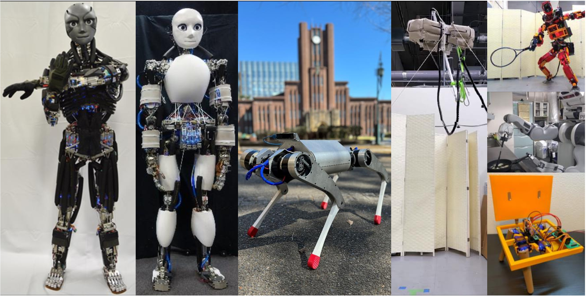

Biography
Career
- Lecturer (Junior Associate Professor) in UTokyo AI Center and Mechano-Informatics, 2025.2- (Graduate School of Information Science and Technology, The University of Tokyo)
- Visiting Researcher, 2024.6-2024.8 (Robotics and Systems Laboratory, ETH Zurich)
- Project Assistant Professor in Mechano-Informatics, 2022.4-2025.1 (Graduate School of Information Science and Technology, The University of Tokyo)
- Ph.D. in Mechano-Informatics, 2019.4-2022.3 (Graduate School of Information Science and Technology, The University of Tokyo)
- M.S. in Mechano-Informatics, 2017.4-2019.3 (Graduate School of Information Science and Technology, The University of Tokyo)
- B.S. in Mechano-Informatics, 2013.4-2017.3 (Faculty of Engineering, The University of Tokyo)

News
- 2025.07.31 - We are organizing a IROS2025 workshop on foundation models for robotic design!
- 2025.07.29 - MIRU2025にて「ロボット基盤モデルの最前線」というチュートリアル講演を行いました.
- 2025.07.23 - Three papers including one first-authored paper were accepted to Humanoids2025!
- 2025.07.22 - We are organizing a CoRL2025 workshop on open-source hardware!
- 2025.07.16 - 講談社様より書籍「基盤モデルとロボットの融合」が出版されます！ぜひ予約してください！
- 2025.06.16 - Four papers including one first-authored paper were accepted to IROS2025!
- 2025.06.10 - Our paper on PIMBS (physics-informed musculoskeletal body schema) was accepted to IEEE RA-L!
- 2025.06.04 - ロボティクス・メカトロニクス講演会2025にて主著2件を含む9件の発表があります.
- 2025.06.03 - ROBOMECH2025ワークショップ「機械学習と人型・多脚・多関節ロボット」にて招待講演を行いました.
- 2025.06.02 - 東北大学タフ･サイバーフィジカルAI研究センターシンポジウムにて招待講演を行いました.
- 2025.05.28 - JSAI2025企画セッション「フィジカルAIシステムの研究開発」にてパネリストを務めました.
- 2025.05.24 - Our paper on reinforcement learning-based obstacle avoidance for aerial robots was accepted to Advanced Robotics!
- 2025.05.09 - Our workshop on Foundation Models for Robotic Design was accepted to IROS2025!
- 2025.05.06 - Our paper on self-healing tendon-driven robot was accepted to Advanced Intelligent Systems!
- 2025.05.01 - IEICE先端セミナーの「生成AIの応用」講座にて講師を務めました.
- 2025.04.09 - Our paper on mobile tendon-driven CubiX was accepted to Advanced Robotic Research!
- 2025.04.02 - I gave a short talk and joined a panel discussion at the Embodied Intelligence Conference (EI2025).
Publications
International Journal Papers
- L. Wu, H. Jia, K. Kawaharazuka, H. Ishida, K. Okada
Dexterous Grasp Dataset Augmentation based on Grasp Synthesis with Fingertip Workspace Cloud and Contact-Aware Sampling, Advanced Robotics (AR), 2025 - K. Kawaharazuka, T. Hattori, K. Yoneda, K. Okada
PIMBS: Efficient Body Schema Learning for Musculoskeletal Humanoids with Physics-Informed Neural Networks, IEEE Robotics and Automation Letters (RAL), vol. 10, no. 7, pp. 7611-7618, 2025, (presented at ICRA2026)
[Paper Link] [Project Page] - S. Nakashima, K. Kawaharazuka, Y. Nagamatsu, K. Shinjo, A. Miki, Y. Asano, Y. Kakiuchi, K. Okada, M. Inaba
Liquid Metal Sloshing for High-load Active Self-healing System: An Application to Tendon-driven Legged Robot, Advanced Intelligent Systems (AISY), 2025
[Paper Link] [Video] - H. Kozuka, M. Zhao, A. Tang, T. Nishio, I. Yanokura, K. Kawaharazuka, J. Sugihara, K. Sugihara, K. Okada, M. Inaba
GenAerialNav: Obstacle Avoidance in Real Flight for Generalized Multirotors by Reinforcement Learning with Variable Acc-Properties in Dynamics, Advanced Robotics (AR), 2025
[Paper Link] [Video] - S. Inoue, K. Kawaharazuka, T. Suzuki, S. Yuzaki, K. Okada, M. Inaba
Overcoming Physical Limitations Utilizing the Surrounding Environment with a Wire-Driven Multipurpose Robot, Advanced Robotics Research (ADRR), vol. 1, no. 1, pp. 202400021, 2025
[Paper Link] [Project Page] [Video] - K. Kawaharazuka, T. Matsushima, A. Gambardella, J. Guo, C. Paxton, A. Zeng
Real-World Robot Applications of Foundation Models: A Review, Advanced Robotics (AR), vol. 38, no. 18, pp. 1232-1254, 2024, (The first two authors contributed equally to this work)
[Paper Link] [Arxiv Link] - N. Kanazawa, K. Kawaharazuka, Y. Obinata, K. Okada, M. Inaba
Real-world cooking robot system from recipes based on food state recognition using foundation models and PDDL, Advanced Robotics (AR), vol. 38, no. 18, pp. 1318-1334, 2024
[Paper Link] [Arxiv Link] [Project Page] [Video] - K. Kawaharazuka, Y. Obinata, N. Kanazawa, N. Tsukamoto, K. Okada, M. Inaba
Reflex-Based Open-Vocabulary Navigation without Prior Knowledge Using Omnidirectional Camera and Multiple Vision-Language Models, Advanced Robotics (AR), vol. 38, no. 18, pp. 1307-1317, 2024
[Paper Link] [Arxiv Link] [Project Page] [Video] - S. Wakabayashi, K. Kawaharazuka, K. Okada, M. Inaba
Behavioral Learning of Dish Rinsing and Scrubbing based on Interruptive Direct Teaching Considering Assistance Rate, Advanced Robotics (AR), vol. 38, no. 15, pp. 1052-1065, 2024
[Paper Link] [Arxiv Link] [Project Page] [Video] - K. Kawaharazuka, K. Okada, M. Inaba
GeMuCo: Generalized Multisensory Correlational Model for Body Schema Learning, IEEE Robotics and Automation Magazine (RAM), 2024, (presented at ICRA2025)
[Paper Link] [Arxiv Link] - K. Kawaharazuka, Y. Obinata, N. Kanazawa, K. Okada, M. Inaba
Robotic Environmental State Recognition with Pre-Trained Vision-Language Models and Black-Box Optimization, Advanced Robotics (AR), vol. 38, no. 18, pp. 1255-1264, 2024
[Paper Link] [Arxiv Link] [Project Page] [Video] - K. Kawaharazuka, N. Kanazawa, Y. Obinata, K. Okada, M. Inaba
Continuous Object State Recognition for Cooking Robots Using Pre-Trained Vision-Language Models and Black-box Optimization, IEEE Robotics and Automation Letters (RAL), vol. 9, no. 5, pp. 4059-4066, 2024, (presented at Humanoids2024)
[Paper Link] [Arxiv Link] [Project Page] [Video] - T. Suzuki, M. Bando, K. Kawaharazuka, K. Okada, M. Inaba
SAQIEL: Ultra-Light and Safe Manipulator with Passive 3D Wire Alignment Mechanism, IEEE Robotics and Automation Letters (RAL), vol. 9, no. 4, pp. 3720-3727, 2024, (presented at IROS2024)
[Paper Link] [Arxiv Link] [Project Page] [Video] - K. Kawaharazuka, S. Yoshimura, T. Suzuki, K. Okada, M. Inaba
Design Optimization of Wire Arrangement With Variable Relay Points in Numerical Simulation for Tendon-Driven Robots, IEEE Robotics and Automation Letters (RAL), vol. 9, no. 2, pp. 1388-1395, 2024, (presented at IROS2024)
[Paper Link] [Arxiv Link] [Project Page] [Video] - K. Kawaharazuka, K. Okada, M. Inaba
Deep Predictive Model Learning with Parametric Bias: Handling Modeling Difficulties and Temporal Model Changes, IEEE Robotics and Automation Magazine (RAM), vol. 31, no. 4, pp. 81-99, 2023, (presented at ICRA2023)
[Paper Link] [Arxiv Link] - K. Kawaharazuka, N. Kanazawa, K. Okada, M. Inaba
Self-Supervised Learning of Visual Servoing for Low-Rigidity Robots Considering Temporal Body Changes, IEEE Robotics and Automation Letters (RAL), vol. 7, no. 3, pp. 7881-7887, 2022, SICE International Young Authors Award (SIYA-IROS2022), (presented at IROS2022)
[Paper Link] [Arxiv Link] [Video] - Y. Omura, K. Kawaharazuka, Y. Nagamatsu, Y. Koga, M. Nishiura, Y. Toshimitsu, Y. Asano, K. Okada, K. Kawasaki, M. Inaba
Human-mimetic binaural ear design and sound source direction estimation for task realization of musculoskeletal humanoids, Robomech Journal, vol. 9, no. 17, pp. 1-15, 2022
[Paper Link] [Arxiv Link] [Video] - K. Kawaharazuka, A. Miki, M. Bando, K. Okada, M. Inaba
Dynamic Cloth Manipulation Considering Variable Stiffness and Material Change Using Deep Predictive Model With Parametric Bias, Frontiers in Neurorobotics, vol. 16, pp. 1-16, 2022
[Paper Link] [Arxiv Link] [Video] - K. Kawaharazuka, M. Nishiura, Y. Toshimitsu, Y. Omura, Y. Koga, Y. Asano, K. Okada, K. Kawasaki, M. Inaba
Robust Continuous Motion Strategy Against Muscle Rupture using Online Learning of Redundant Intersensory Networks for Musculoskeletal Humanoids, Robotics and Autonomous Systems (RAS), vol. 152, pp. 1-14, 2022
[Paper Link] [Arxiv Link] [Video] - K. Kawaharazuka, A. Miki, Y. Toshimitsu, K. Okada, M. Inaba
Adaptive Body Schema Learning System Considering Additional Muscles for Musculoskeletal Humanoids, IEEE Robotics and Automation Letters (RAL), vol. 7, no. 2, pp. 3459-3466, 2022, (presented at ICRA2022)
[Paper Link] [Arxiv Link] [Video] - K. Kawaharazuka, K. Okada, M. Inaba
Adaptive Robotic Tool-Tip Control Learning Considering Online Changes in Grasping State, IEEE Robotics and Automation Letters (RAL), vol. 6, no. 3, pp. 5992-5999, 2021, (presented at IROS2021)
[Paper Link] [Arxiv Link] [Video] - K. Kawaharazuka, Y. Kawamura, K. Okada, M. Inaba
Imitation Learning with Additional Constraints on Motion Style using Parametric Bias, IEEE Robotics and Automation Letters (RAL), vol. 6, no. 3, pp. 5897-5904, 2021, (presented at IROS2021)
[Paper Link] [Arxiv Link] [Video] - Y. Koga, K. Kawaharazuka, Y, Toshimitsu, M. Nishiura, Y. Omura, Y. Asano, K. Okada, K. Kawasaki, M. Inaba
Self-Body Image Acquisition and Posture Generation with Redundancy using Musculoskeletal Humanoid Shoulder Complex for Object Manipulation, IEEE Robotics and Automation Letters (RAL), vol. 6, no. 4, pp. 6686-6692, 2021, (presented at IROS2021)
[Paper Link] [Arxiv Link] [Video] - K. Kawaharazuka, M. Nishiura, Y. Koga, Y. Omura, Y. Toshimitsu, Y. Asano, K. Okada, K. Kawasaki, M. Inaba
Automatic Grouping of Redundant Sensors and Actuators Using Functional and Spatial Connections: Application to Muscle Grouping for Musculoskeletal Humanoids, IEEE Robotics and Automation Letters (RAL), vol. 6, no. 2, pp. 1981-1988, 2021, (presented at ICRA2021)
[Paper Link] [Arxiv Link] [Video] - K. Kawaharazuka, K. Tsuzuki, Y. Koga, Y. Omura, T. Makabe, K. Shinjo, M. Onitsuka, Y. Nagamatsu, Y. Asano, K. Okada, K. Kawasaki, M. Inaba
Toward Autonomous Driving by Musculoskeletal Humanoids: Study of Developed Hardware and Learning-Based Software, IEEE Robotics and Automation Magazine (RAM), vol. 27, no. 3, pp. 84-96, 2020, (presented at ICRA2021)
[Paper Link] [Arxiv Link] [Video] - K. Kawaharazuka, K. Tsuzuki, M. Onitsuka, Y. Asano, K. Okada, K. Kawasaki, M. Inaba
Object Recognition, Dynamic Contact Simulation, Detection, and Control of the Flexible Musculoskeletal Hand Using a Recurrent Neural Network With Parametric Bias, IEEE Robotics and Automation Letters (RAL), vol. 5, no. 3, pp. 4580-4587, 2020, (presented at IROS2020)
[Paper Link] [Arxiv Link] [Video] - K. Kawaharazuka, N. Hiraoka, K. Tsuzuki, M. Onitsuka, Y. Asano, K. Okada, K. Kawasaki, M. Inaba
Estimation and Control of Motor Core Temperature with Online Learning of Thermal Model Parameters: Application to Musculoskeletal Humanoids, IEEE Robotics and Automation Letters (RAL), vol. 5, no. 3, pp. 4273-4280, 2020, (presented at IROS2020)
[Paper Link] [Arxiv Link] - K. Kawaharazuka, K. Tsuzuki, M. Onitsuka, Y. Asano, K. Okada, K. Kawasaki, M. Inaba
Musculoskeletal AutoEncoder: A Unified Online Acquisition Method of Intersensory Networks for State Estimation, Control, and Simulation of Musculoskeletal Humanoids, IEEE Robotics and Automation Letters (RAL), vol. 5, no. 2, pp. 2411-2418, 2020, (presented at ICRA2020)
[Paper Link] [Arxiv Link] [Video] - K. Kawaharazuka, S. Makino, M. Kawamura, S. Nakashima, Y. Asano, K. Okada, M. Inaba
Human Mimetic Forearm and Hand Design with a Radioulnar Joint and Flexible Machined Spring Finger for Human Skillful Motions, Journal of Robotics and Mechatronics (JRM), vol. 32, no. 2, pp. 445-458, 2020, (The first two authors contributed equally to this work)
[Paper Link] [Arxiv Link] [Video] - K. Kawaharazuka, K. Tsuzuki, S. Makino, M. Onitsuka, Y. Asano, K. Okada, K. Kawasaki, M. Inaba
Long-time Self-body Image Acquisition and its Application to the Control of Musculoskeletal Structures, IEEE Robotics and Automation Letters (RAL), vol. 4, no. 3, pp. 2965-2972, 2019, (presented at IROS2019)
[Paper Link] [Arxiv Link] [Video] - K. Kawaharazuka, S. Makino, M. Kawamura, Y. Asano, K. Okada, M. Inaba
Online Learning of Joint-Muscle Mapping using Vision in Tendon-driven Musculoskeletal Humanoids, IEEE Robotics and Automation Letters (RAL), vol. 3, no. 2, pp. 772-779, 2018, (presented at ICRA2018)
[Paper Link] [Arxiv Link] [Video] - K. Kawaharazuka, M. Kawamura, S. Makino, Y. Asano, K. Okada, M. Inaba
Antagonist Inhibition Control in Redundant Tendon-driven Structures Based on Human Reciprocal Innervation for Wide Range Limb Motion of Musculoskeletal Humanoids, IEEE Robotics and Automation Letters (RAL), vol. 2, no. 4, pp. 2119-2126, 2017, (presented at IROS2017)
[Paper Link] [Arxiv Link] [Video]
International Conference Proceedings (Peer Reviewed)
- K. Kawaharazuka, S. Sawaguchi, A. Iwata, K. Yoneda, T. Suzuki, K. Okada
MEVITA: Open-Source Bipedal Robot Assembled from E-Commerce Components via Sheet Metal Welding, in Humanoids2025, 2025, (The first two authors contributed equally to this work) - T. Suzuki, K. Kawaharazuka, K. Okada
A Universal Wire Testing Machine for Enhancing the Performance of Wire-Driven Robots, in Humanoids2025, 2025 - T. Hattori, K. Kawaharazuka, K. Okada
Design and Development of a Remotely Wire-Driven Walking Robot, in Humanoids2025, 2025 - K. Kawaharazuka, S. Inoue, Y. Sahara, K. Yoneda, T. Suzuki, K. Okada
Design Optimization of Three-Dimensional Wire Arrangement Considering Wire Crossings for Tendon-driven Robots, in 2025 IEEE/RSJ International Conference on Intelligent Robots and Systems (IROS2025), 2025
[Arxiv Link] [Project Page] [Video] - K. Yoneda, K. Kawaharazuka, T. Suzuki, T. Hattori, K. Okada
KLEIYN : A Quadruped Robot with an Active Waist for Both Locomotion and Wall Climbing, in 2025 IEEE/RSJ International Conference on Intelligent Robots and Systems (IROS2025), 2025
[Arxiv Link] [Project Page] [Video] - S. Inoue, K. Kawaharazuka, K. Yoneda, S. Yuzaki, Y. Sahara, T. Suzuki, K. Okada
An RGB-D Camera-Based Multi-Small Flying Anchors Control for Wire-Driven Robots Connecting to the Environment, in 2025 IEEE/RSJ International Conference on Intelligent Robots and Systems (IROS2025), 2025 - S. Yoshimura, K. Kawaharazuka, K. Okada
M3D-skin: Multi-material 3D-printed Tactile Sensor with Hierarchical Infill Structures for Pressure Sensing, in 2025 IEEE/RSJ International Conference on Intelligent Robots and Systems (IROS2025), 2025 - R. Watanabe, T. Miki, F. Shi, Y. Kadokawa, F. Bjelonic, K. Kawaharazuka, A. Cramariuc, M. Hutter
Learning Quiet Walking for a Small Home Robot, in 2025 IEEE International Conference on Robotics and Automation (ICRA2025), 2025
[Arxiv Link] [Project Page] [Video] - S. Kim, N. Kanazawa, S. Hasegawa, K. Kawaharazuka, K. Okada
Front Hair Styling Robot System Using Path Planning for Root-Centric Strand Adjustment, in 2025 IEEE/SICE International Symposium on System Integration (SII2025), 2025, Best Student Paper Finalist
[Arxiv Link] [Video] - K. Kawaharazuka, S. Inoue, T. Suzuki, S. Yuzaki, S. Sawaguchi, K. Okada, M. Inaba
MEVIUS: A Quadruped Robot Easily Constructed through E-Commerce with Sheet Metal Welding and Machining, in 2024 IEEE-RAS International Conference on Humanoid Robots (HUMANOIDS2024), pp. 631-636, 2024
[Paper Link] [Arxiv Link] [Project Page] [Source Code] [Video] - K. Kawaharazuka, Y. Obinata, N. Kanazawa, K. Okada, M. Inaba
Robotic State Recognition with Image-to-Text Retrieval Task of Pre-Trained Vision-Language Model and Black-Box Optimization, in 2024 IEEE-RAS International Conference on Humanoid Robots (HUMANOIDS2024), pp. 934-940, 2024
[Paper Link] [Arxiv Link] [Video] - S. Inoue, K. Kawaharazuka, T. Suzuki, S. Yuzaki, Y. Ribayashi, Y. Sahara, K. Okada
CubiXMusashi: Fusion of Wire-Driven CubiX and Musculoskeletal Humanoid Musashi toward Unlimited Performance, in 2024 IEEE-RAS International Conference on Humanoid Robots (HUMANOIDS2024), pp. 274-279, 2024, Mike Stillman Award
[Paper Link] [Arxiv Link] [Project Page] [Video] - Y. Iwata, S. Hasegawa, K. Kawaharazuka, K. Okada, M. Inaba
Integrative Wrapping System for a Dual-Arm Humanoid Robot, in 2024 IEEE-RAS International Conference on Humanoid Robots (HUMANOIDS2024), pp. 84-90, 2024, Kanako Miura Award
[Paper Link] [Arxiv Link] - Y. Obinata, H. Jia, K. Kawaharazuka, N. Kanazawa, K. Okada
Remote Life Support Robot Interface System for Global Task Planning and Local Action Expansion Using Foundation Models, in 2024 IEEE-RAS International Conference on Humanoid Robots (HUMANOIDS2024), pp. 738-743, 2024
[Paper Link] [Arxiv Link] [Video] - S. Sawaguchi, T. Suzuki, A. Miki, K. Kawaharazuka, S. Yuzaki, S. Yoshimura, Y. Ribayashi, K. Okada, M. Inaba
Vlimb: A Wire-Driven Wearable Robot for Bodily Extension, Balancing Powerfulness and Reachability, in 2024 IEEE-RAS International Conference on Humanoid Robots (HUMANOIDS2024), pp. 851-857, 2024
[Paper Link] [Arxiv Link] [Video] - Y. Ribayashi, Y. Sahara, S. Sawaguchi, K. Miyama, A. Miki, K. Kawaharazuka, K. Okada, M. Inaba
Fundamental Three-Dimensional Configuration of Wire-Wound Muscle-Tendon Complex Drive, in 2024 IEEE-RAS International Conference on Humanoid Robots (HUMANOIDS2024), pp. 980-987, 2024
[Paper Link] [Arxiv Link] [Video] - K. Kawaharazuka, K. Okada, M. Inaba
Robot Design Optimization with Rotational and Prismatic Joints Using Black-Box Multi-Objective Optimization, in 2024 IEEE/RSJ International Conference on Intelligent Robots and Systems (IROS2024), pp. 4571-4577, 2024
[Paper Link] [Arxiv Link] [Project Page] [Video] - S. Inoue, K. Kawaharazuka, T. Suzuki, S. Yuzaki, K. Okada, M. Inaba
CubiX: Portable Wire-Driven Parallel Robot Connecting to and Utilizing the Environment, in 2024 IEEE/RSJ International Conference on Intelligent Robots and Systems (IROS2024), pp. 1296-1301, 2024, SICE International Young Authors Award (SIYA-IROS2024), IEEE RAS Japan Joint Chapter Young Award (2024)
[Paper Link] [Arxiv Link] [Project Page] [Video] - S. Yoshimura, A. Miki, K. Miyama, Y. Sahara, K. Kawaharazuka, K. Okada, M. Inaba
Patterned Structure Muscle : Arbitrary Shaped Wire-Driven Artificial Muscle Utilizing Anisotropic Flexible Structure for Musculoskeletal Robots, in 2024 IEEE/RSJ International Conference on Intelligent Robots and Systems (IROS2024), pp. 13930-13937, 2024, SICE International Young Authors Award (SIYA-IROS2024), IEEE RAS Japan Joint Chapter Young Award (2024)
[Paper Link] [Arxiv Link] - Y. Sahara, A. Miki, Y. Ribayashi, S. Yoshimura, K. Kawaharazuka, K. Okada, M. Inaba
Construction of Musculoskeletal Simulation for Shoulder Complex with Ligaments and Its Validation via Model Predictive Control, in 2024 IEEE/RSJ International Conference on Intelligent Robots and Systems (IROS2024), pp. 327-333, 2024
[Paper Link] [Arxiv Link] [Project Page] - K. Kawaharazuka, K. Okada, M. Inaba
Robotic Constrained Imitation Learning for the Peg Transfer Task in Fundamentals of Laparoscopic Surgery, in 2024 IEEE International Conference on Robotics and Automation (ICRA2024), pp. 606-612, 2024
[Paper Link] [Arxiv Link] [Project Page] [Video] - K. Kawaharazuka, K. Okada, M. Inaba
Adaptive Whole-body Robotic Tool-use Learning on Low-rigidity Plastic-made Humanoids Using Vision and Tactile Sensors, in 2024 IEEE International Conference on Robotics and Automation (ICRA2024), pp. 583-589, 2024
[Paper Link] [Arxiv Link] [Project Page] [Video] - A. Tang, T. Hiraoka, N. Hiraoka, F. Shi, K. Kawaharazuka, K. Kojima, K. Okada, M. Inaba
HumanMimic: Learning Natural Locomotion and Transitions for Humanoid Robot via Wasserstein Adversarial Imitation, in 2024 IEEE International Conference on Robotics and Automation (ICRA2024), pp. 13107-13114, 2024
[Paper Link] [Arxiv Link] [Video] - K. Shirai, C. C. Beltran-Hernandez, M. Hamaya, A. Hashimoto, S. Tanaka, K. Kawaharazuka, K. Tanaka, Y. Ushiku, S. Mori
Vision-Language Interpreter for Robot Task Planning, in 2024 IEEE International Conference on Robotics and Automation (ICRA2024), pp. 2051-2058, 2024
[Paper Link] [Arxiv Link] [Project Page] [Source Code] - Open X-Embodiment Collaboration
Open X-Embodiment: Robotic Learning Datasets and RT-X Models, in 2024 IEEE International Conference on Robotics and Automation (ICRA2024), pp. 6892-6903, 2024, Best Conference Paper Award, Finalists of Best Paper Award in Robot Manipulation
[Paper Link] [Arxiv Link] [Project Page] - S. Inoue, K. Kawaharazuka, K. Okada, M. Inaba
Body Design and Gait Generation of Chair-Type Asymmetrical Tripedal Low-rigidity Robot, in 2024 IEEE International Conference on Soft Robotics (ROBOSOFT2024), pp. 593-600, 2024
[Paper Link] [Arxiv Link] [Project Page] [Video] - A. Miki, Y. Sahara, K. Miyama, Y. Ribayashi, K. Kawaharazuka, S. Hasegawa, K. Okada, M. Inaba
Designing Fluid-Exuding Cartilage for Biomimetic Robots Mimicking Human Joint Lubrication Function, in 2024 IEEE International Conference on Soft Robotics (ROBOSOFT2024), pp. 452-459, 2024
[Paper Link] [Arxiv Link] - K. Kawaharazuka, Y. Obinata, N. Kanazawa, K. Okada, M. Inaba
Robotic Applications of Pre-Trained Vision-Language Models to Various Recognition Behaviors, in 2023 IEEE-RAS International Conference on Humanoid Robots (HUMANOIDS2023), pp. 458-465, 2023
[Paper Link] [Arxiv Link] - K. Kawaharazuka, N. Kanazawa, Y. Obinata, K. Okada, M. Inaba
Daily Assistive View Control Learning of Low-Cost Low-Rigidity Robot via Large-Scale Vision-Language Model, in 2023 IEEE-RAS International Conference on Humanoid Robots (HUMANOIDS2023), pp. 452-457, 2023
[Paper Link] [Arxiv Link] [Video] - S. Yoshimura, S. Yuzaki, K. Kawaharazuka, K. Okada, M. Inaba
Optimization of Muscle Arrangement Extraction from Human Waist Structure for Biomimetic Humanoid Implementation, in 2023 IEEE-RAS International Conference on Humanoid Robots (HUMANOIDS2023), pp. 583-590, 2023
[Paper Link] - Y. Ribayashi, K. Miyama, A. Miki, K. Kawaharazuka, K. Okada, M. Inaba
Development of a Wire-Wound Muscle-Tendon Complex Drive and Its Application to a Two-Dimensional Robot Configuration, in 2023 IEEE-RAS International Conference on Humanoid Robots (HUMANOIDS2023), pp. 758-764, 2023
[Paper Link] - S. Yuzaki, A. Miki, M. Bando, S. Yoshimura, T. Suzuki, K. Kawaharazuka, K. Okada, M. Inaba
Fusion of Body and Environment with Movable Carabiners for Wire-Driven Robots Toward Expansion of Physical Capabilities, in 2023 IEEE-RAS International Conference on Humanoid Robots (HUMANOIDS2023), pp. 679-685, 2023
[Paper Link] - K. Kawaharazuka, T. Makabe, K. Okada, M. Inaba
Daily Assistive Modular Robot Design Based on Multi-Objective Black-Box Optimization, in 2023 IEEE/RSJ International Conference on Intelligent Robots and Systems (IROS2023), pp. 9970-9977, 2023
[Paper Link] [Arxiv Link] [Project Page] [Video] - Y. Matsuura, K. Kawaharazuka, N. Hiraoka, K. Kojima, K. Okada, M. Inaba
Development of a Whole-Body Work Imitation Learning System by a Biped and Bi-Armed Humanoid, in 2023 IEEE/RSJ International Conference on Intelligent Robots and Systems (IROS2023), pp. 10374-10381, 2023
[Paper Link] [Arxiv Link] [Project Page] [Video] - Y. Obinata, K. Kawaharazuka, N. Kanazawa, N. Yamaguchi, N. Tsukamoto, I. Yanokura, S. Kitagawa, K. Shinjo, K. Okada, M. Inaba
Semantic Scene Difference Detection in Daily Life Patroling by Mobile Robots Using Pre-Trained Large-Scale Vision-Language Model, in 2023 IEEE/RSJ International Conference on Intelligent Robots and Systems (IROS2023), pp. 3228-3233, 2023, IEEE RAS Japan Joint Chapter Young Award (2023), SICE International Young Authors Award (SIYA-IROS2023)
[Paper Link] [Arxiv Link] - K. Miyama, K. Kawaharazuka, K. Okada, M. Inaba
Development of a Five-Fingerd Biomimetic Soft Robotic Hand by 3D Printing the Skin and Skeleton As One Unit, in 2023 IEEE/RSJ International Conference on Intelligent Robots and Systems (IROS2023), pp. 6624-6630, 2023, SICE International Young Authors Award (SIYA-IROS2023)
[Paper Link] - S. Yoshimura, T. Suzuki, M. Bando, S. Yuzaki, K. Kawaharazuka, K. Okada, M. Inaba
Design Method of a Kangaroo Robot with High Power Legs and an Articulated Soft Tail, in 2023 IEEE/RSJ International Conference on Intelligent Robots and Systems (IROS2023), pp. 6631-6638, 2023
[Paper Link] [Arxiv Link] - A. Ichikura, K. Kawaharazuka, Y. Obinata, K. Okada, M. Inaba
A Method for Selecting Scenes and Emotion-Based Descriptions for a Robot's Diary, in 32nd IEEE International Conference on Robot and Human Interactive Communication (ROMAN2023), pp. 1683-1688, 2023
[Paper Link] [Arxiv Link] - A. Miki, K. Kawaharazuka, M. Bando, K. Okada, K. Kawasaki, M. Inaba
System Architecture and Real-World Task Realization of Musculoskeletal Wheeled Robot Musashi-W with Various Hardware Components, in 18th International Conference on Intelligent Autonomous Systems (IAS2023), pp. 109-122, 2023
[Paper Link] - L. Wu, K. Kawaharazuka, S. Hasegawa, K. Okada, M. Inaba
Workspace-Based Precision Grasp Pose Generator for Multi-Fingered Robotic Hands, in 18th International Conference on Intelligent Autonomous Systems (IAS2023), pp. 379-392, 2023
[Paper Link] - N. Kanazawa, K. Kawaharazuka, Y. Obinata, K. Okada, M. Inaba
Recognition of Heat-Induced Food State Changes by Time-Series Use of Vision-Language Model for Cooking Robot, in 18th International Conference on Intelligent Autonomous Systems (IAS2023), pp. 547-560, 2023
[Paper Link] [Arxiv Link] - A. Ichikura, K. Kawaharazuka, Y. Obinata,, K. Shinjo, K. Okada, M. Inaba
Automatic Diary Generation System Including Information on Joint Experiences between Humans and Robots, in 18th International Conference on Intelligent Autonomous Systems (IAS2023), pp. 399-412, 2023
[Paper Link] [Arxiv Link] - K. Kawaharazuka, Y. Obinata, N. Kanazawa, K. Okada, M. Inaba
VQA-based Robotic State Recognition Optimized with Genetic Algorithm, in 2023 IEEE International Conference on Robotics and Automation (ICRA2023), pp. 8306-8311, 2023
[Paper Link] [Arxiv Link] - H. Sato, K. Kawaharazuka, T. Makabe, K. Okada, M. Inaba
Online Estimation of Self-Body Deflection with Various Sensor Data Based on Directional Statistics, in 2023 IEEE/SICE International Symposium on System Integration (SII2023), pp. 1-8, 2023
[Paper Link] [Arxiv Link] - K. Kawaharazuka, A. Miki, M. Bando, T. Suzuki, Y. Ribayashi, Y. Toshimitsu, Y. Nagamatsu, K. Okada, M. Inaba
Hardware Design and Learning-Based Software Architecture of Musculoskeletal Wheeled Robot Musashi-W for Real-World Applications, in 2022 IEEE-RAS International Conference on Humanoid Robots (HUMANOIDS2022), pp. 413-419, 2022, Best Interactive Paper Award Finalist
[Paper Link] [Arxiv Link] [Video] - K. Kawaharazuka, T. Suzuki, K. Okada, M. Inaba
Continuous Jumping of a Parallel Wire-Driven Monopedal Robot RAMIEL Using Reinforcement Learning, in 2022 IEEE-RAS International Conference on Humanoid Robots (HUMANOIDS2022), pp. 759-764, 2022
[Paper Link] [Arxiv Link] [Video] - K. Kawaharazuka, N. Kanazawa, K. Okada, M. Inaba
Learning-Based Wiping Behavior of Low-Rigidity Robots Considering Various Surface Materials and Task Definitions, in 2022 IEEE-RAS International Conference on Humanoid Robots (HUMANOIDS2022), pp. 919-924, 2022
[Paper Link] [Arxiv Link] [Video] - Y. Ribayashi, K. Kawaharazuka, Y. Toshimitsu, D. Kusuyama, A. Miki, K. Shinjo, M. Bando, T. Suzuki, Y. Kojio, K. Okada, M. Inaba
Design of Robot Foot with Outer Edge Measurement Structure and Chair Rotation Motion by Friction Control, in 2022 IEEE-RAS International Conference on Humanoid Robots (HUMANOIDS2022), pp. 314-321, 2022, (Top 7 Best Oral Paper Presentation)
[Paper Link] - K. Miyama, S. Hasegawa, K. Kawaharazuka, N. Yamaguchi, K. Okada, M. Inaba
Design of a Five-Fingered Hand with Full-Fingered Tactile Sensors Using Conductive Filaments and Its Application to Bending after Insertion Motion, in 2022 IEEE-RAS International Conference on Humanoid Robots (HUMANOIDS2022), pp. 780-785, 2022
[Paper Link] [Arxiv Link] - K. Kawaharazuka, K. Okada, M. Inaba
Realization of Seated Walk by a Musculoskeletal Humanoid with Buttock-Contact Sensors From Human Constrained Teaching, in 2022 IEEE/RSJ International Conference on Intelligent Robots and Systems (IROS2022), pp. 5774-5780, 2022
[Paper Link] [Arxiv Link] [Video] - K. Kawaharazuka, K. Okada, M. Inaba
Online Learning Feedback Control Considering Hysteresis for Musculoskeletal Structures, in 2022 IEEE/RSJ International Conference on Intelligent Robots and Systems (IROS2022), pp. 5767-5773, 2022
[Paper Link] [Arxiv Link] [Video] - K. Kawaharazuka, Y. Ribayashi, A. Miki, Y. Toshimitsu, T. Suzuki, K. Okada, M. Inaba
Learning of Balance Controller Considering Changes in Body State for Musculoskeletal Humanoids, in 2022 IEEE/RSJ International Conference on Intelligent Robots and Systems (IROS2022), pp. 5809-5816, 2022
[Paper Link] [Arxiv Link] [Video] - Y. Toshimitsu, K. Kawaharazuka, A. Miki, K. Okada, M. Inaba
DIJE: Dense Image Jacobian Estimation for Robust Robotic Self-Recognition and Visual Servoing, in 2022 IEEE/RSJ International Conference on Intelligent Robots and Systems (IROS2022), pp. 2219-2226, 2022
[Paper Link] [Video] - Y. Ribayashi, K. Kawaharazuka, Y. Toshimitsu, D. Kusuyama, A. Miki, K. Shinjo, M. Bando, T. Suzuki, Y. Kojio, K. Okada, M. Inaba
Imitation Behavior of the Outer Edge of the Foot by Humanoids Using a Simplified Contact State Representation, in 2022 IEEE/RSJ International Conference on Intelligent Robots and Systems (IROS2022), pp. 4243-4249, 2022
[Paper Link] - T. Suzuki, Y. Toshimitsu, Y. Nagamatsu, K. Kawaharazuka, A. Miki, Y. Ribayashi, M. Bando, K. Kojima, Y. Kakiuchi, K. Okada, M. Inaba
RAMIEL: A Parallel-Wire Driven Monopedal Robot for High and Continuous Jumping, in 2022 IEEE/RSJ International Conference on Intelligent Robots and Systems (IROS2022), pp. 5017-5024, 2022, SICE International Young Authors Award (SIYA-IROS2022)
[Paper Link] [Arxiv Link] [Project Page] [Video] - K. Kawaharazuka, K. Shinjo, Y. Kawamura, K. Okada, M. Inaba
Environmentally Adaptive Control Including Variance Minimization Using Stochastic Predictive Network with Parametric Bias: Application to Mobile Robots, in 2021 IEEE/RSJ International Conference on Intelligent Robots and Systems (IROS2021), pp. 8381-8387, 2021
[Paper Link] [Arxiv Link] [Video] - K. Kawaharazuka, Y. Toshimitsu, M. Nishiura, Y. Koga, Y. Omura, Y. Asano, K. Okada, K. Kawasaki, M. Inaba
Design Optimization of Musculoskeletal Humanoids with Maximization of Redundancy to Compensate for Muscle Rupture, in 2021 IEEE/RSJ International Conference on Intelligent Robots and Systems (IROS2021), pp. 3204-3210, 2021
[Paper Link] [Arxiv Link] [Video] - K. Kawaharazuka, N. Hiraoka, Y. Koga, M. Nishiura, Y. Omura, Y. Asano, K. Okada, K. Kawasaki, M. Inaba
Online Learning of Danger Avoidance for Complex Structures of Musculoskeletal Humanoids and Its Applications, in 2020 IEEE-RAS International Conference on Humanoid Robots (HUMANOIDS2020), pp. 349-355, 2021
[Paper Link] - K. Kawaharazuka, Y. Koga, M. Nishiura, Y. Omura, Y. Asano, K. Okada, K. Kawasaki, M. Inaba
Motion Modification Method of Musculoskeletal Humanoids by Human Teaching Using Muscle-Based Compensation Control, in 2020 IEEE-RAS International Conference on Humanoid Robots (HUMANOIDS2020), pp. 83-89, 2021
[Paper Link] [Arxiv Link] [Video] - M. Onitsuka, M. Nishiura, K. Kawaharazuka, K. Tsuzuki, Y. Toshimitsu, Y. Omura, Y. Asano, K. Okada, K. Kawasaki, M. Inaba
Development of Musculoskeletal Legs with Planar Interskeletal Structures to Realize Human Comparable Moving Function, in 2020 IEEE-RAS International Conference on Humanoid Robots (HUMANOIDS2020), pp. 17-24, 2021, Best Oral Paper Award, Finalists of Mike Stilman Paper Award
[Paper Link] [Arxiv Link] [Video] - Y. Toshimitsu, K. Kawaharazuka, M. Nishiura, Y. Koga, Y. Omura, Y. Asano, K. Okada, K. Kawasaki, M. Inaba
Biomimetic Operational Space Control for Musculoskeletal Humanoid Optimizing across Muscle Activation and Joint Nullspace, in 2021 IEEE International Conference on Robotics and Automation (ICRA2021), pp. 1184-1190, 2021
[Paper Link] [Video] - S. Nakashima, K. Kawaharazuka, M. Nishiura, Y. Asano, Y. Kakiuchi, K. Okada, K. Kawasaki, M. Inaba
Restoring Force Design of Active Self-Healing Tension Transmission System and Application to Tendon-Driven Legged Robot, in 2021 IEEE International Conference on Robotics and Automation (ICRA2021), pp. 7033-7038, 2021
[Paper Link] - K. Kawaharazuka, M. Nishiura, S. Nakashima, Y. Toshimitsu, Y. Omura, Y. Koga, Y. Asano, K. Okada, K. Kawasaki, M. Inaba
Stability Recognition with Active Vibration for Bracing Behaviors and Motion Extensions Using Environment in Musculoskeletal Humanoids, in 2021 IEEE International Conference on Soft Robotics (ROBOSOFT2021), pp. 126-133, 2021
[Paper Link] - K. Kawaharazuka, Y. Koga, K. Tsuzuki, M. Onitsuka, Y. Asano, K. Okada, K. Kawasaki, M. Inaba
Exceeding the Maximum Speed Limit of the Joint Angle for the Redundant Tendon-driven Structures of Musculoskeletal Humanoids, in 2020 IEEE/RSJ International Conference on Intelligent Robots and Systems (IROS2020), pp. 3585-3590, 2020
[Paper Link] [Arxiv Link] - K. Kawaharazuka, Y. Koga, K. Tsuzuki, M. Onitsuka, Y. Asano, K. Okada, K. Kawasaki, M. Inaba
Applications of Stretch Reflex for the Upper Limb of Musculoskeletal Humanoids: Protective Behavior, Postural Stability, and Active Induction, in 2020 IEEE/RSJ International Conference on Intelligent Robots and Systems (IROS2020), pp. 3598-3603, 2020
[Paper Link] [Arxiv Link] - K. Kawaharazuka, T. Ogawa, C. Nabeshima
Tool Shape Optimization through Backpropagation of Neural Network, in 2020 IEEE/RSJ International Conference on Intelligent Robots and Systems (IROS2020), pp. 8387-8393, 2020
[Paper Link] [Arxiv Link] [Video] - Y. Toshimitsu, K. Kawaharazuka, K. Tsuzuki, M. Onitsuka M. Nishiura, Y. Koga, Y. Omura, M. Tomita, Y. Asano, K. Okada, K. Kawasaki, M. Inaba
Biomimetic Control Scheme for Musculoskeletal Humanoids Based on Motor Directional Tuning in the Brain, in 2020 IEEE/RSJ International Conference on Intelligent Robots and Systems (IROS2020), pp. 7784-7791, 2020
[Paper Link] [Video] - K. Kawaharazuka, K. Tsuzuki, M. Onitsuka, Y. Asano, K. Okada, K. Kawasaki, M. Inaba
Stable Tool-Use with Flexible Musculoskeletal Hands by Learning the Predictive Model of Sensor State Transition, in 2020 IEEE International Conference on Robotics and Automation (ICRA2020), pp. 4572-4578, 2020
[Paper Link] [Arxiv Link] [Video] - T. Nishio, M. Zhao, F. Shi, T. Anzai, K. Kawaharazuka, K. Okada, M. Inaba
Stable Control in Climbing and Descending Flight under Upper Walls using Ceiling Effect Model based on Aerodynamics, in 2020 IEEE International Conference on Robotics and Automation (ICRA2020), pp. 172-178, 2020
[Paper Link] - K. Kawaharazuka, S. Makino, K. Tsuzuki, M. Onitsuka, Y. Nagamatsu, K. Shinjo, T. Makabe, Y. Asano, K. Okada, K. Kawasaki, M. Inaba
Component Modularized Design of Musculoskeletal Humanoid Platform Musashi to Investigate Learning Control Systems, in 2019 IEEE/RSJ International Conference on Intelligent Robots and Systems (IROS2019), pp. 7294-7301, 2019
[Paper Link] [Arxiv Link] [Video] - K. Kawaharazuka, K. Tsuzuki, S. Makino, M. Onitsuka, K. Shinjo, Y. Asano, K. Okada, K. Kawasaki, M. Inaba
Task-specific Self-body Controller Acquisition by Musculoskeletal Humanoids: Application to Pedal Control in Autonomous Driving, in 2019 IEEE/RSJ International Conference on Intelligent Robots and Systems (IROS2019), pp. 813-818, 2019
[Paper Link] [Arxiv Link] [Video] - K. Kawaharazuka, T. Ogawa, C. Nabeshima
Dynamic Task Control Method of a Flexible Manipulator Using a Deep Recurrent Neural Network, in 2019 IEEE/RSJ International Conference on Intelligent Robots and Systems (IROS2019), pp. 7689-7695, 2019
[Paper Link] [Arxiv Link] [Video] - K. Shinjo, K. Kawaharazuka, Y. Asano, S. Nakashima, S. Makino, M. Onitsuka, K. Tsuzuki, K. Okada, K. Kawasaki, M. Inaba
Foot with a Core-shell Structural Six-axis Force Sensor for Pedal Depressing and Recovering from Foot Slipping during Pedal Pushing Toward Autonomous Driving by Humanoids, in 2019 IEEE/RSJ International Conference on Intelligent Robots and Systems (IROS2019), pp. 3049-3054, 2019
[Paper Link] - S. Nakashima, T. Shirai, K. Kawaharazuka, Y. Asano Y. Kakiuchi, K. Okada, M. Inaba
An Approach of Facilitated Investigation of Active Self-healing Tension Transmission System Oriented for Legged Robots, in 2019 IEEE/RSJ International Conference on Intelligent Robots and Systems (IROS2019), pp. 2567-2572, 2019, SICE International Young Authors Award (SIYA-IROS2019)
[Paper Link] - T. Makabe, T. Shirai, Y. Nagamatsu, K. Kawaharazuka, S. Fumihito, K. Okada, M. Inaba
Development of Joint Module with Two-Speed Gear Transmission and Joint Lock Mechanism during Driving for Task Adaptable Robot, in 2019 IEEE/RSJ International Conference on Intelligent Robots and Systems (IROS2019), pp. 5123-5130, 2019
[Paper Link] - K. Kawaharazuka, K. Tsuzuki, M. Onitsuka, Y. Koga, Y. Omura, Y. Asano, K. Okada, K. Kawasaki, M. Inaba
Reflex-based Motion Strategy of Musculoskeletal Humanoids under Environmental Contact Using Muscle Relaxation Control, in 2019 IEEE-RAS International Conference on Humanoid Robots (HUMANOIDS2019), pp. 114-119, 2019
[Paper Link] - Y. Koga, K. Kawaharazuka, M. Onitsuka, T. Makabe, K. Tsuzuki, Y. Omura, Y. Asano, K. Okada, M. Inaba
Modification of Muscle Antagonistic Relations and Hand Trajectory on the Dynamic Motion of Musculoskeletal Humanoid, in 2019 IEEE-RAS International Conference on Humanoid Robots (HUMANOIDS2019), pp. 632-637, 2019
[Paper Link] [Arxiv Link] [Video] - Y. Asano, S. Nakashima, I. Yanokura, M. Onitsuka, K. Kawaharazuka, K. Tsuzuki, Y. Koga, Y. Omura, K. Okada, M. Inaba
Ankle-Hip-Stepping Stabilizer on Tendon-Driven Humanoid Kengoro by Integration of Muscle-Joint-Work Space Controllers for Knee-Stretched Humanoid Balance, in 2019 IEEE-RAS International Conference on Humanoid Robots (HUMANOIDS2019), pp. 397-402, 2019
[Paper Link] - K. Kawaharazuka, T. Ogawa, J. Tamura, C. Nabeshima
Dynamic Manipulation of Flexible Objects with Torque Sequence Using a Deep Neural Network, in 2019 IEEE International Conference on Robotics and Automation (ICRA2019), pp. 2139-2145, 2019
[Paper Link] [Arxiv Link] [Video] - K. Kawaharazuka, T. Makabe, S. Makino, K. Tsuzuki, Y. Nagamatsu, Y. Asano, T. Shirai, F. Sugai, K. Okada, K. Kawasaki, M. Inaba
TWIMP: Two-Wheel Inverted Musculoskeletal Pendulum as a Learning Control Platform in the Real World with Environmental Physical Contact, in 2018 IEEE-RAS International Conference on Humanoid Robots (HUMANOIDS2018), pp. 784-790, 2018, (The first two authors contributed equally to this work)
[Paper Link] [Arxiv Link] [Video] - K. Kawaharazuka, S. Makino, M. Kawamura, Y. Asano, K. Okada, M. Inaba
A Method of Joint Angle Estimation Using Only Relative Changes in Muscle Lengths for Tendon-driven Humanoids with Complex Musculoskeletal Structures, in 2018 IEEE-RAS International Conference on Humanoid Robots (HUMANOIDS2018), pp. 1128-1135, 2018
[Paper Link] [Arxiv Link] [Video] - T. Makabe, K. Kawaharazuka, K. Tsuzuki, K. Wada, S. Makino, M. Kawamura, A. Fujii, M. Onitsuka, Y. Asano, K. Okada, K. Kawasaki, M. Inaba
Development of Movable Binocular High-Resolution Eye-Camera Unit for Humanoid and the Evaluation of Looking Around Fixation Control and Object Recognition, in 2018 IEEE-RAS International Conference on Humanoid Robots (HUMANOIDS2018), pp. 840-845, 2018
[Paper Link] - K. Kawaharazuka, S. Makino, M. Kawamura, A. Fujii, Y. Asano, K. Okada, M. Inaba
Online Self-body Image Acquisition Considering Changes in Muscle Routes Caused by Softness of Body Tissue for Tendon-driven Musculoskeletal Humanoids, in 2018 IEEE/RSJ International Conference on Intelligent Robots and Systems (IROS2018), pp. 1711-1717, 2018
[Paper Link] [Arxiv Link] [Video] - S. Makino, K. Kawaharazuka, M. Kawamura, A. Fujii, T. Makabe, M. Onitsuka, Y. Asano, K. Okada, K. Kawasaki, M. Inaba
Five-Fingered Hand with Wide Range of Thumb Using Combination of Machined Springs and Variable Stiffness Joints, in 2018 IEEE/RSJ International Conference on Intelligent Robots and Systems (IROS2018), pp. 4562-4567, 2018, IEEE RAS Japan Joint Chapter Young Award (2018), IROS ICROS Best Application Paper Award 2018 Finalists
[Paper Link] [Arxiv Link] [Video] - A. Fujii, S. Nakashima, M. Kawamura, K. Kawaharazuka, S. Makino, Y. Asano, K. Okada, M. Inaba
Development and Functional Evaluation of a Deformable Membrane Capsule for an Open Ball Glenohumeral Joint, in 2018 IEEE RAS/EMBS International Conference on Biomedical Robotics and Biomechatronics (BIOROB2018), pp. 853-858, 2018
[Paper Link] - K. Kawaharazuka, S. Makino, M. Kawamura, Y. Asano, Y. Kakiuchi, K. Okada, M. Inaba
Human Mimetic Forearm Design with Radioulnar Joint using Miniature Bone-muscle Modules and its Applications, in 2017 IEEE/RSJ International Conference on Intelligent Robots and Systems (IROS2017), pp. 4956-4962, 2017, IEEE RAS Japan Joint Chapter Young Award (2017)
[Paper Link] [Arxiv Link] [Video] - S. Makino, K. Kawaharazuka, M. Kawamura, Y. Asano, K. Okada, M. Inaba
High-power, flexible, robust hand: Development of musculoskeletal hand using machined springs and realization of self-weight supporting motion with humanoid, in 2017 IEEE/RSJ International Conference on Intelligent Robots and Systems (IROS2017), pp. 1187-1192, 2017
[Paper Link] [Arxiv Link] [Video] - Y. Asano, T. Kozuki, S. Ookubo, M. Kawamura, S. Nakashima, T. Katayama, Y. Iori, H. Toshinori, K. Kawaharazuka, S. Makino, Y. Kakiuchi, K. Okada, M. Inaba
Human Mimetic Musculoskeletal Humanoid Kengoro toward Real World Physically Interactive Actions, in 2016 IEEE-RAS International Conference on Humanoid Robots (HUMANOIDS2016), pp. 876-883, 2016, Best Interactive Paper Award Finalist
[Paper Link] [Video]
International Workshop, Extended Abstract, etc.
- K. Kawaharazuka, T. Matsushima, S. Kurita, C. Paxton, A. Zeng, T. Ogata, T. Taniguchi
Special issue on real-world robot applications of the foundation models, Advanced Robotics (AR), vol. 38, no. 18, pp. 1231, 2024, (Preface)
[Paper Link] - K. Kawaharazuka, Y. Obinata, N. Kanazawa, N. Tsukamoto, K. Okada
Reflexive Open-Vocabulary Navigation without Prior Knowledge Using Omnidirectional Camera and Multiple Vision-Language Models, 2024 IEEE/RSJ International Conference on Intelligent Robots and Systems (IROS2024), 2024, Excellent Practice Award, (Workshop on Environment Dynamics Matters: Embodied Navigation to Movable Objects) - S. Yoshimura, T. Suzuki, M. Bando, S. Yuzaki, K. Kawaharazuka, K. Okada, M. Inaba
Development of a Kangaroo-inspired Robot with High-Power Legs and an Articulated Tail, 2024 IEEE/RSJ International Conference on Intelligent Robots and Systems (IROS2024), 2024, (Workshop on Bio-inspired, Biomimetics, and Biohybrid (Cyborg) Systems) - Open X-Embodiment Collaboration
Open X-Embodiment: Robotic Learning Datasets and RT-X Models, 2023 Neural Information Processing Systems (NeurIPS2023), 2023, (6th Robot Learning Workshop: Pretraining, Fine-Tuning, and Generalization with Large Scale Models) - Open X-Embodiment Collaboration
Open X-Embodiment: Robotic Learning Datasets and RT-X Models, 2023 Conference on Robot Learning (CoRL2023), 2023, (2nd Workshop on Language and Robot Learning: Language as Grounding) - Open X-Embodiment Collaboration
Open X-Embodiment: Robotic Learning Datasets and RT-X Models, 2023 Conference on Robot Learning (CoRL2023), 2023, (Workshop on Towards Generalist Robots: Learning Paradigms for Scalable Skill Acquisition) - Y. Ribayashi, K. Miyama, A. Miki, K. Kawaharazuka, K. Okada, K. Kawasaki, M. Inaba
Muscle-Tendon Complex-Inspired Deformable Exteriors as a Wire-Drive Extension, 11th International Symposium on Adaptive Motion of Animals and Machines (AMAM2023), 2023
[Paper Link] - K. Kawaharazuka, K. Tsuzuki, S. Makino, Y. Asano, K. Okada, M. Inaba
Modeling and Online Learning of Musculoskeletal Intersensory Networks for Static Controls of Tendon-driven Humanoids, 9th International Symposium on Adaptive Motion of Animals and Machines (AMAM2019), 2019, Company of Biologists Early Career Researcher Grant (500 GBP)
[Paper Link]
arXiv
- K. Kawaharazuka, Y. Obinata, N. Kanazawa, K. Okada, M. Inaba
Binary State Recognition by Robots using Visual Question Answering of Pre-Trained Vision-Language Model, arXiv preprint arXiv:2310.16405, 2023
[Arxiv Link] - Y. Obinata, N. Kanazawa, K. Kawaharazuka, I. Yanokura, S. Kim, K. Okada, M. Inaba
Foundation Model based Open Vocabulary Task Planning and Executive System for General Purpose Service Robots, arXiv preprint arXiv:2308.03357, 2023
[Arxiv Link] [Video]
Domestic Journal Papers
- 吉野 幸一郎, 谷口 忠大, 持橋 大地, 河原塚 健人, 松嶋 達也, 品川 政太朗, 小林 一郎
NLP2024 併設ワークショップ「大規模言語モデルの実世界応用」, 自然言語処理学会誌 (NLP), vol. 31, no. 2, pp. 809-815, 2024
[Paper Link] - 新城 光樹, 大日方 慶樹, 河原塚 健人, 岡田 慧, 稲葉 雅幸
ロボットの階層移動のためのマルチセンサ・IoTスイッチを用いた簡易取付可能なエレベータ状態認識・操作システム, 日本ロボット学会誌 (JRSJ), vol. 43, no. 2, pp. 189-197, 2025
[Paper Link] - 三木 章寛, 永松 祐弥, 板東 正祐, 河原塚 健人, 利光 泰徳, 平岡 直樹, 岡田 慧, 稲葉 雅幸
高応答性を備え多様なロボットの扱いを可能とするハードウェア抽象化デバイス制御プラットフォーム開発, 日本ロボット学会誌 (JRSJ), vol. 43, no. 1, pp. 75-86, 2024
[Paper Link] - 河原塚 健人, 大日方 慶樹, 金沢 直晃, 岡田 慧, 稲葉 雅幸
大規模視覚-言語モデルと遺伝的アルゴリズムに基づくロボットのための状態認識, 日本ロボット学会誌 (JRSJ), vol. 42, no. 3, pp. 259-265, 2024
[Paper Link] - 鈴木 天馬, 河原塚 健人, 岡田 慧, 稲葉 雅幸
パラレルワイヤ脚の跳躍性能に関する力学モデルに基づく検討と実機における検証, 日本ロボット学会誌 (JRSJ), vol. 42, no. 3, pp. 274-282, 2024
[Paper Link] - 金沢 直晃, 河原塚 健人, 大日方 慶樹, 岡田 慧, 稲葉 雅幸
料理レシピ記述解析と視覚 - 言語モデルの時系列利用による食材状態変化認識に基づくロボットの調理作業実行, 日本ロボット学会誌 (JRSJ), vol. 42, no. 3, pp. 266-273, 2024
[Paper Link] - 河原塚 健人
情報化身体の学習理論に基づく成長ロボットの革新と創成, 日本ロボット学会誌 (JRSJ), vol. 41, no. 8, pp. 669-672, 2023, (解説記事)
[Paper Link] - 河原塚 健人
パラメトリックバイアスを含む深層予測モデル学習, 日本ロボット学会誌 (JRSJ), vol. 40, no. 9, pp. 784-789, 2022, (解説記事)
[Paper Link] - 浅野 悠紀, 河原塚 健人, 永松 祐弥, 古賀 悠矢, 大村 柚介, 真壁 佑, 藤井 綺香, 中島 慎介, 新城 光樹, 西浦 学, 利光 泰徳, 冨田 幹, 岡田 慧, 清水 智哉, 近藤 淳, 川崎 宏治, 豊島 浩二, 稲葉 雅幸
ロボット技術の社会実装に向けた腱駆動ヒューマノイドによる自動車運転の実証実験と義足開発への展開 --腱駆動ヒューマノイドによる自動車運転を通じた産官学の社会連携活動--, 日本ロボット学会誌 (JRSJ), vol. 40, no. 3, pp. 240-250, 2022
[Paper Link]
Domestic Conference Proceedings (Peer Reviewed)
- 河原塚 健人, 大日方 慶樹, 金沢 直晃, 岡田 慧, 稲葉 雅幸
視覚-言語モデルと遺伝的アルゴリズムに基づくロボットのための離散・連続状態認識, in 第28回ロボティクスシンポジア (ROBOSYM23J), pp. 34-35, 2023 - 大日方 慶樹, 河原塚 健人, 金沢 直晃, 山口 直也, 塚本 直人, 矢野倉 伊織, 北川 晋吾, 岡田 慧, 稲葉 雅幸
事前学習済み視覚-言語モデルを用いた巡回ロボットの長期記憶に基づく日常環境の状況分類, in 第28回ロボティクスシンポジア (ROBOSYM23J), pp. 36-37, 2023 - 金沢 直晃, 河原塚 健人, 大日方 慶樹, 岡田 慧, 稲葉 雅幸
調理支援ロボットの視覚-言語モデル時系列利用によるレシピ記述からの食材状態変化認識, in 第28回ロボティクスシンポジア (ROBOSYM23J), pp. 66-67, 2023, ロボティクスシンポジア研究奨励賞 - 鈴木 天馬, 河原塚 健人, 岡田 慧, 稲葉 雅幸
パラレルワイヤ一本脚ロボットの跳躍モデルと設計法, in 第28回ロボティクスシンポジア (ROBOSYM23J), pp. 50-51, 2023 - 深山 和浩, 李林 嘉元, 河原塚 健人, 岡田 慧, 稲葉 雅幸
骨格表皮を一体に3Dプリントしたロボットハンドの開発, in 第28回ロボティクスシンポジア (ROBOSYM23J), pp. 293-294, 2023 - 三木 章寛, 板東 正祐, 永松 祐弥, 河原塚 健人, 利光 泰徳, 平岡 直樹, 岡田 慧, 稲葉 雅幸
多種ロボットの扱いと高応答性を両立したハードウェア抽象化デバイス制御プラットフォーム開発, in 第28回ロボティクスシンポジア (ROBOSYM23J), pp. 239-240, 2023, 第3回日本ロボット学会ロボティクスシンポジア優秀研究・技術賞 - 河原塚 健人, 牧野 将吾, 川村 将矢, 藤井 綺香, 浅野 悠紀, 岡田 慧, 稲葉 雅幸
筋骨格ヒューマノイドにおける身体組織の柔軟性による筋経路変化を考慮した逐次的自己身体像の獲得, in 第23回ロボティクスシンポジア (ROBOSYM18J), pp. 306-312, 2018
Domestic Conference Proceedings (No Reviewed)
- 河原塚 健人
オープンハードウェアと学習制御 - チュートリアル2025, in 第43回日本ロボット学会学術講演会 (RSJ25J), 3M1-01, 2025 - 河原塚 健人, 澤口 昇吾, 岩田 歩, 米田 慶太, 鈴木 天馬, 岡田 慧
MEVITA: E-Commerceにより誰でも簡単に構築可能なオープンソース二足歩行ロボット, in 第43回日本ロボット学会学術講演会 (RSJ25J), 3M1-05, 2025 - 河原塚 健人, 大日方 慶樹, 金沢 直晃, 贾 浩宇, 岡田 慧
多目的ブラックボックス最適化と大規模言語モデルを併用した効率的なロボット身体設計, in 第43回日本ロボット学会学術講演会 (RSJ25J), 1M5-01, 2025 - 河原塚 健人, 松嶋 達也, 宮澤 和貴
基盤モデルの実ロボット応用 - チュートリアル2025 (1), in 第43回日本ロボット学会学術講演会 (RSJ25J), 1M1-01, 2025 - 松嶋 達也, 宮澤 和貴, 河原塚 健人
基盤モデルの実ロボット応用 - チュートリアル2025 (2), in 第43回日本ロボット学会学術講演会 (RSJ25J), 1M1-02, 2025 - 宮澤 和貴, 河原塚 健人, 松嶋 達也
基盤モデルの実ロボット応用 - チュートリアル2025 (3), in 第43回日本ロボット学会学術講演会 (RSJ25J), 1M1-03, 2025 - 服部 高拓, 河原塚 健人, 鈴木 天馬, 米田 慶太, 岡田 慧
遠隔ワイヤ駆動型移動作業ロボットREWWARMの特性評価と制御, in 第43回日本ロボット学会学術講演会 (RSJ25J), 1H3-01, 2025 - 吉村 駿之介, 河原塚 健人, 岡田 慧
階層的インフィル構造を有するマルチマテリアル3Dプリント圧力センサの開発, in 第43回日本ロボット学会学術講演会 (RSJ25J), 1P3-01, 2025 - 鈴木 天馬, 河原塚 健人, 岡田 慧
ワイヤ干渉駆動マニュピレータの受動プーリにおける張力損失の補償, in 第43回日本ロボット学会学術講演会 (RSJ25J), 1P3-02, 2025 - 勇崎 颯太, 井上 信多郎, 鈴木 天馬, 河原塚 健人, 岡田 慧
ワイヤ駆動空中移動ロボットCALVADOSのドローンとの連携による障害物回避行動の実現, in 第43回日本ロボット学会学術講演会 (RSJ25J), 1R3-06, 2025 - 井上 信多郎, 河原塚 健人, 鈴木 天馬, 勇崎 颯太,, 岡田 慧, 稲葉 雅幸
環境接続可能なワイヤ駆動ロボットCubiXの道具合体利用による多種タスク実行, in 第43回日本ロボット学会学術講演会 (RSJ25J), 2E2-04, 2025 - 三木 章寛, 長谷川 峻, 李林 嘉元, 佐原 侑太, 河原塚 健人, 岡田 慧
人体の感覚器配置を模倣した生体模倣皮膚の構成と検証, in 第43回日本ロボット学会学術講演会 (RSJ25J), 2H2-02, 2025 - 李林 嘉元, 三木 章寛, 河原塚 健人, 岡田 慧
筋腱複合体駆動を用いた身体構成における弾性利用動作, in 第43回日本ロボット学会学術講演会 (RSJ25J), 2H3-01, 2025 - 岩田 歩, 河原塚 健人, 米田 慶太, 岡田 慧
等身大双腕ロボットの強化学習による鉄棒大車輪動作の獲得, in 第43回日本ロボット学会学術講演会 (RSJ25J), 3M2-02, 2025 - 米田 慶太, 河原塚 健人, 服部 高拓, 岡田 慧
腰関節を有する四脚ロボットKLEIYNによる強化学習に基づく立ち上がり動作と二足歩行の実現, in 第43回日本ロボット学会学術講演会 (RSJ25J), 3M2-05, 2025 - 佐原 侑太, 河原塚 健人, 岡田 慧
腱の巻き付きと経路短絡を考慮した腱駆動アームの設計最適化, in 第43回日本ロボット学会学術講演会 (RSJ25J), 3H3-01, 2025 - 河原塚 健人, 岡田 慧, 稲葉 雅幸
回転関節と直動関節を含むロボット設計の多目的ブラックボックス最適化, in 日本機械学会ロボティクス・メカトロニクス講演会'25 (ROBOMECH25J), 1A1-Q01, 2025 - 河原塚 健人, 井上 信多郎, 鈴木 天馬, 勇崎 颯太, 澤口 昇吾, 岡田 慧, 稲葉 雅幸
MEVIUS: 金属切削と板金溶接によりE-Commerceで容易に構築可能な4脚ロボット, in 日本機械学会ロボティクス・メカトロニクス講演会'25 (ROBOMECH25J), 2A2-A07, 2025 - 米田 慶太, 河原塚 健人, 鈴木 天馬, 服部 高拓, 岡田 慧
腰関節を有する四脚ロボットKLEIYNの強化学習に基づく歩行と壁登り動作の実現, in 日本機械学会ロボティクス・メカトロニクス講演会'25 (ROBOMECH25J), 2A2-A08, 2025 - 服部 高拓, 河原塚 健人, 鈴木 天馬, 勇崎 颯太, 米田 慶太, 岡田 慧
ワイヤ遠隔駆動機構と可変剛性伸縮機構を有する細径移動作業ロボットの設計開発, in 日本機械学会ロボティクス・メカトロニクス講演会'25 (ROBOMECH25J), 1P1-E02, 2025 - 鈴木 天馬, 河原塚 健人, 岡田 慧
強化学習におけるsim2realに向けたパラレルワイヤ駆動一本脚跳躍ロボットRAMIEL2の設計, in 日本機械学会ロボティクス・メカトロニクス講演会'25 (ROBOMECH25J), 1P1-E03, 2025 - 井上 信多郎, 河原塚 健人, 米田 慶太, 勇崎 颯太, 佐原 侑太, 鈴木 天馬, 岡田 慧
環境接続ワイヤ駆動ロボットにおけるRGB-Dカメラを用いたマルチ小型飛行アンカー制御, in 日本機械学会ロボティクス・メカトロニクス講演会'25 (ROBOMECH25J), 2A2-J03, 2025 - 吉村 駿之介, 鈴木 天馬, 河原塚 健人, 岡田 慧
導電性触覚構造を有する柔軟ラティス構造筋で構成された人体模倣脚の触覚反応動作, in 日本機械学会ロボティクス・メカトロニクス講演会'25 (ROBOMECH25J), 2A2-L05, 2025 - 勇崎 颯太, 井上 信多郎, 鈴木 天馬, 河原塚 健人, 岡田 慧
ワイヤ駆動空中移動ロボットCALVADOSの軌道計画とジャンプ動作の実現, in 日本機械学会ロボティクス・メカトロニクス講演会'25 (ROBOMECH25J), 1A2-Q01, 2025 - Xu Dong, Shun Hasegawa, Liqi Wu, Kento Kawaharazuka, Kunio Kojima, Kei Okada
A Dual-Track Pulley Actuation System for the Development of Lightweight and Compact Cable-driven Upper Limb Exosuits, in 日本機械学会ロボティクス・メカトロニクス講演会'25 (ROBOMECH25J), 2P2-K12, 2025 - 河原塚 健人, 大日方 慶樹, 金沢 直晃, 塚本 直人, 岡田 慧
全天球カメラと事前学習済み視覚-言語モデルによる事前知識を必要としない反射型Open Vocabulary Navigation, in 第25回SICEシステムインテグレーション部門講演会 (SI24J), 1F6-04, 2024, 優秀講演賞 - 井上 信多郎, 河原塚 健人, 鈴木 天馬, 勇崎 颯太, 李林 嘉元, 佐原 侑太, 岡田 慧
環境接続可能なワイヤ駆動ロボットCubiXによる筋骨格ヒューマノイドMusashiの運動能力拡張, in 第25回SICEシステムインテグレーション部門講演会 (SI24J), 3E5-08, 2024, 優秀講演賞 - 河原塚 健人, 金沢 直晃, 大日方 慶樹, 岡田 慧
大規模視覚-言語モデルによる調理ロボットの時系列食材状態認識, in 第42回日本ロボット学会学術講演会 (RSJ24J), 3D2-03, 2024 - 河原塚 健人, 松嶋 達也, 宮澤 和貴
基盤モデルの実ロボット応用 - チュートリアルA, in 第42回日本ロボット学会学術講演会 (RSJ24J), 3D1-01, 2024
[Slide] - 松嶋 達也, 宮澤 和貴, 河原塚 健人
基盤モデルの実ロボット応用 - チュートリアルB, in 第42回日本ロボット学会学術講演会 (RSJ24J), 3D1-02, 2024 - 宮澤 和貴, 河原塚 健人, 松嶋 達也
基盤モデルの実ロボット応用 - チュートリアルC, in 第42回日本ロボット学会学術講演会 (RSJ24J), 3D1-03, 2024 - 井上 信多郎, 河原塚 健人, 鈴木 天馬, 勇崎 颯太, 岡田 慧, 稲葉 雅幸
環境接続可能なワイヤ駆動ロボットCubiXによる2台の飛行アンカーを用いた雲梯動作, in 第42回日本ロボット学会学術講演会 (RSJ24J), 1J5-03, 2024 - 米田 慶太, 河原塚 健人, 岡田 慧
弾性脚を用いた六脚ロボットの設計と強化学習を用いた対面壁登り動作の実現, in 第42回日本ロボット学会学術講演会 (RSJ24J), 2H1-05, 2024 - 服部 高拓, 河原塚 健人, 岡田 慧
身体にアクチュエータを一切含まない腱駆動歩行ロボットの設計と制御, in 第42回日本ロボット学会学術講演会 (RSJ24J), 2H1-06, 2024 - 大日方 慶樹, 賈 浩宇, 河原塚 健人, 金沢 直晃, 岡田 慧
あいまいな生活支援ロボット動作記述のVLMとARデバイスを用いた提示と指示による展開, in 第42回日本ロボット学会学術講演会 (RSJ24J), 3D3-02, 2024 - 吉村 駿之介, 鈴木 天馬, 佐原 侑太, 河原塚 健人, 岡田 慧
柔軟ラティス構造を活用したワイヤ駆動人工筋肉で構成される人体模倣脚の製作, in 第42回日本ロボット学会学術講演会 (RSJ24J), 3J1-05, 2024 - 勇崎 颯太, 鈴木 天馬, 井上 信多郎, 河原塚 健人, 岡田 慧
ワイヤ駆動空中移動ロボットの地上と空中を含む多様なロコモーション, in 第42回日本ロボット学会学術講演会 (RSJ24J), 1J5-04, 2024 - 河原塚 健人, 吉村 駿之介, 鈴木 天馬, 岡田 慧, 稲葉 雅幸
可変経由点を含む腱駆動ロボットのワイヤ配置設計最適化, in 日本機械学会ロボティクス・メカトロニクス講演会'24 (ROBOMECH24J), 1A1-M02, 2024 - 井上 信多郎, 河原塚 健人, 鈴木 天馬, 勇崎 颯太, 岡田 慧, 稲葉 雅幸
環境接続可能なワイヤ駆動ロボットによる空間移動と物体操作, in 日本機械学会ロボティクス・メカトロニクス講演会'24 (ROBOMECH24J), 1A1-M01, 2024 - 鈴木 天馬, 河原塚 健人, 岡田 慧, 稲葉 雅幸
受動3次元ワイヤ動力伝達機構における伝達効率の解析, in 日本機械学会ロボティクス・メカトロニクス講演会'24 (ROBOMECH24J), 1P1-O09, 2024, 日本機械学会若手優秀講演フェロー賞 - 澤口 昇吾, 鈴木 天馬, 三木 章寛, 河原塚 健人, 勇崎 颯太, 吉村 駿之介, 岡田 慧, 稲葉 雅幸
力強さと動作範囲を両立するワイヤ駆動型身体拡張ウェアラブルロボット Vlimb の設計法, in 日本機械学会ロボティクス・メカトロニクス講演会'24 (ROBOMECH24J), 1P2-E06, 2024 - 勇崎 颯太, 鈴木 天馬, 吉村 駿之介, 澤口 昇吾, 井上 信多郎, 河原塚 健人, 岡田 慧, 稲葉 雅幸
大出力ワイヤ巻き取り機と大径タイヤを有するワイヤ駆動空中移動ロボットの開発, in 日本機械学会ロボティクス・メカトロニクス講演会'24 (ROBOMECH24J), 1P1-N09, 2024 - 吉村 駿之介, 三木 章寛, 深山 和浩, 佐原 侑太, 河原塚 健人, 岡田 慧, 稲葉 雅幸
柔軟ラティス構造を活用したワイヤ駆動人工筋肉と筋骨格上腕構造の構成, in 日本機械学会ロボティクス・メカトロニクス講演会'24 (ROBOMECH24J), 2P1-I01, 2024 - 佐原 侑太, 三木 章寛, 李林 嘉元, 吉村 駿之介, 河原塚 健人, 岡田 慧, 稲葉 雅幸
靭帯を備えた肩複合体の筋骨格シミュレーションモデルの構成法と制御, in 日本機械学会ロボティクス・メカトロニクス講演会'24 (ROBOMECH24J), 2P1-I02, 2024 - 三木 章寛, 佐原 侑太, 吉村 駿之介, 李林 嘉元, 勇崎 颯太, 深山 和浩, 長谷川 峻, 河原塚 健人, 岡田 慧, 稲葉 雅幸
関節液内包機能と関節受容器機能を備えた人体模倣ロボットの関節包構成法, in 日本機械学会ロボティクス・メカトロニクス講演会'24 (ROBOMECH24J), 2P1-I03, 2024 - 李林 嘉元, 佐原 侑太, 澤口 昇吾, 深山 和浩, 三木 章寛, 河原塚 健人, 岡田 慧, 稲葉 雅幸
アーチ状構造材を用いた膨張を伴う変形の設計とワイヤ巻取式人工筋肉への適用, in 日本機械学会ロボティクス・メカトロニクス講演会'24 (ROBOMECH24J), 2P1-K10, 2024 - 園田 美郷, 唐 安南, 石田 寛和, 平岡 拓真, 河原塚 健人, 小島 邦生, 岡田 慧, 稲葉 雅幸
相対ロッド位置姿勢に着目した正二十面体テンセグリティロボットの転がり運動制御方策の学習獲得, in 日本機械学会ロボティクス・メカトロニクス講演会'24 (ROBOMECH24J), 2P1-M10, 2024 - 大日方 慶樹, 塚本 直人, 河原塚 健人, 金沢 直晃, 岡田 慧, 稲葉 雅幸
生活支援ロボットの現場知識に基づくオンライン動作プログラム展開, in 第38回人工知能学会全国大会 (JSAI24J), 4E1-GS-8-04, 2024 - 金沢 直晃, 河原塚 健人, 大日方 慶樹, 岡田 慧, 稲葉 雅幸
基盤モデルと古典プランニングを用いたレシピ記述からの実世界調理計画認識実行ロボットシステム, in 言語処理学会第30回年次大会 (NLP24J), E1-3, 2024 - 金沢 直晃, 河原塚 健人, 大日方 慶樹, 岡田 慧, 稲葉 雅幸
対象物状態中心の調理行動記述に基づくレシピからの卵料理の実世界調理実行ロボットシステム, in 第24回SICEシステムインテグレーション部門講演会 (SI23J), 3G2-08, 2023, 優秀講演賞 - 深山 和浩, 李林 嘉元, 三木 章寛, 河原塚 健人, 岡田 慧, 稲葉 雅幸
導電性フィラメントによる表皮骨格一体ロボットハンドの接触点推定に関する研究, in 第24回SICEシステムインテグレーション部門講演会 (SI23J), 2E3-08, 2023 - 三木 章寛, 佐原 侑太, 深山 和浩, 李林 嘉元, 長谷川 峻, 河原塚 健人, 岡田 慧, 稲葉 雅幸
人の関節潤滑機能を模した人体模倣ロボットの液体滲出軟骨機構の構成法, in 第24回SICEシステムインテグレーション部門講演会 (SI23J), 2E3-07, 2023, 優秀講演賞 - 湯田 一成, 唐 安南, 小島 邦生, 河原塚 健人, 岡田 慧, 稲葉 雅幸
等身大ヒューマノイドの全身運動におけるエネルギー効率に着目した関節運動協調性の解析, in 第24回SICEシステムインテグレーション部門講演会 (SI23J), 3H2-06, 2023 - 金 淳暁, 金沢 直晃, 長谷川 峻, 河原塚 健人, 岡田 慧, 稲葉 雅幸
生活支援ロボットを用いた視覚と力覚に基づく頭髪ブラッシング動作生成に関する研究, in 第24回SICEシステムインテグレーション部門講演会 (SI23J), 3F1-08, 2023 - 河原塚 健人, 松嶋 達也
基盤モデルの実ロボット応用 - チュートリアル1, in 第41回日本ロボット学会学術講演会 (RSJ23J), 1K3-01, 2023
[Slide] - 松嶋 達也, 河原塚 健人
基盤モデルの実ロボット応用 - チュートリアル2, in 第41回日本ロボット学会学術講演会 (RSJ23J), 1K3-02, 2023
[Slide] - 金沢 直晃, 河原塚 健人, 大日方 慶樹, 岡田 慧, 稲葉 雅幸
調理ロボットのための基盤モデル利用によるレシピ記述からの卵料理の食材状態変化認識と動作シーケンス生成, in 第41回日本ロボット学会学術講演会 (RSJ23J), 1K3-03, 2023 - 呉 知勳, 河原塚 健人, 石田 寛和, 岡田 慧, 稲葉 雅幸
実時間物体追跡を用いた視覚的変化にロバストなロボットのVisuomotor方策獲得システム, in 第41回日本ロボット学会学術講演会 (RSJ23J), 1K3-07, 2023 - 大日方 慶樹, 金沢 直晃, 河原塚 健人, 矢野倉 伊織, 金 淳暁, 岡田 慧, 稲葉 雅幸
大規模言語モデルによるタスク実行管理器生成法とRoboCup JapanOpen @Home League GPSRタスクへの応用, in 第41回日本ロボット学会学術講演会 (RSJ23J), 1K4-05, 2023, 日本ロボット学会第5回優秀講演賞 - 塚本 直人, 河原塚 健人, 市倉 愛子, 岡田 慧, 稲葉 雅幸
大規模視覚-言語モデルとデータベースを用いたロボットの記憶蓄積とユーザーへの共有, in 第41回日本ロボット学会学術講演会 (RSJ23J), 1K4-07, 2023 - 井上 信多郎, 河原塚 健人, 岡田 慧, 稲葉 雅幸
椅子型非対称三脚移動ロボットの身体設計と歩容生成, in 第41回日本ロボット学会学術講演会 (RSJ23J), 2D1-04, 2023 - 鈴木 天馬, 河原塚 健人, 岡田 慧, 稲葉 雅幸
ワイヤ干渉駆動アームによる高速打撃動作実現, in 第41回日本ロボット学会学術講演会 (RSJ23J), 3E4-02, 2023 - 勇崎 颯太, 鈴木 天馬, 河原塚 健人, 岡田 慧, 稲葉 雅幸
ワイヤ駆動型3次元空中移動装置のシミュレーションによる検討, in 第41回日本ロボット学会学術講演会 (RSJ23J), 1D2-01, 2023 - 小塚 陽希, 趙 漠居, 西尾 卓純, 唐 安南, 河原塚 健人, 岡田 慧, 川崎 宏治, 稲葉 雅幸
実機検証に基づく時間遅れに着目したマルチロータ障害物回避のための汎用的な学習方策の構築, in 第41回日本ロボット学会学術講演会 (RSJ23J), 2H3-05, 2023 - 吉村 駿之介, 鈴木 天馬, 勇崎 颯太, 河原塚 健人, 岡田 慧, 稲葉 雅幸
多目的ブラックボックス最適化とモデル予測制御による拮抗ワイヤ駆動脚の筋配置生成, in 第41回日本ロボット学会学術講演会 (RSJ23J), 3I3-07, 2023 - 三木 章寛, 佐原 侑太, 深山 和浩, 吉村 駿之介, 李林 嘉元, 長谷川 峻, 河原塚 健人, 岡田 慧, 稲葉 雅幸
人間の関節可動域を満たす模擬靭帯構成法の基礎的検討, in 第41回日本ロボット学会学術講演会 (RSJ23J), 1B3-03, 2023 - 河原塚 健人, 真壁 佑, 岡田 慧, 稲葉 雅幸
多目的ブラックボックス最適化に基づく作業支援モジュラーロボット設計, in 日本機械学会ロボティクス・メカトロニクス講演会'23 (ROBOMECH23J), 1P1-G13, 2023 - 河原塚 健人, 岡田 慧, 稲葉 雅幸
制約付き模倣学習によるロボットの腹腔鏡手術の基本技能訓練, in 日本機械学会ロボティクス・メカトロニクス講演会'23 (ROBOMECH23J), 2P2-B22, 2023 - 吉村 駿之介, 鈴木 天馬, 板東 正祐, 勇崎 颯太, 河原塚 健人, 岡田 慧, 稲葉 雅幸
脚と尻尾を有するカンガルーロボットの構成法と跳躍動作の実現, in 日本機械学会ロボティクス・メカトロニクス講演会'23 (ROBOMECH23J), 1A1-E19, 2023, 日本機械学会若手優秀講演フェロー賞 - 深山 和浩, 河原塚 健人, 岡田 慧, 稲葉 雅幸
五指を有する表皮骨格一体型ロボットハンドの製作, in 日本機械学会ロボティクス・メカトロニクス講演会'23 (ROBOMECH23J), 1A1-F23, 2023 - L. Wu, K. Kawaharazuka, K. Okada, M. Inaba
Object size based fingertip workspace processing for acceleration of grasp pose generation, in 日本機械学会ロボティクス・メカトロニクス講演会'23 (ROBOMECH23J), 1A1-F24, 2023 - 勇崎 颯太, 三木 章寛, 板東 正祐, 吉村 駿之介, 鈴木 天馬, 河原塚 健人, 岡田 慧, 稲葉 雅幸
環境を利用した身体能力拡張行動のための可動カラビナワイヤモジュールの設計と動作実現, in 日本機械学会ロボティクス・メカトロニクス講演会'23 (ROBOMECH23J), 1A1-I11, 2023 - 市倉 愛子, 河原塚 健人, 大日方 慶樹, 岡田 慧, 稲葉 雅幸
ロボットのお散歩体験日記 - 記述内容の違いによる読者の感想比較, in 日本機械学会ロボティクス・メカトロニクス講演会'23 (ROBOMECH23J), 1A2-C26, 2023 - 鈴木 天馬, 板東 正祐, 河原塚 健人, 岡田 慧, 川崎 宏治, 稲葉 雅幸
3次元受動ワイヤ整列装置の製作と7自由度マニュピレータへの適用, in 日本機械学会ロボティクス・メカトロニクス講演会'23 (ROBOMECH23J), 1A1-H16, 2023 - 金沢 直晃, 河原塚 健人, 石田 寛和, 岡田 慧, 稲葉 雅幸
反復自動データ収集を用いた模倣学習による環境設備操作タスクの実現, in 日本機械学会ロボティクス・メカトロニクス講演会'23 (ROBOMECH23J), 1P1-D05, 2023 - 大日方 慶樹, 河原塚 健人, 金沢 直晃, 山口 直也, 塚本 直人, 矢野倉 伊織, 北川 晋吾, 岡田 慧, 稲葉 雅幸
大規模視覚-言語モデルとチャットインタフェースを用いた生活環境の分類とロボットタスクマッピングシステム, in 日本機械学会ロボティクス・メカトロニクス講演会'23 (ROBOMECH23J), 1P1-D06, 2023 - 小塚 陽希, 趙 漠居, 西尾 卓純, 唐 安南, 河原塚 健人, 岡田 慧, 川崎 宏治, 稲葉 雅幸
汎用的なマルチロータに適応可能な学習方策による障害物回避動作の実現, in 日本機械学会ロボティクス・メカトロニクス講演会'23 (ROBOMECH23J), 2A2-D10, 2023, 日本ロボット学会第2回若手講演賞 - 三木 章寛, 河原塚 健人, 板東 正祐, 岡田 慧, 川崎 宏治, 稲葉 雅幸
脱着可能なワイヤモジュールを用いた環境物自在操作の実現, in 日本機械学会ロボティクス・メカトロニクス講演会'23 (ROBOMECH23J), 2P1-C25, 2023 - 李林 嘉元, 深山 和浩, 三木 章寛, 河原塚 健人, 岡田 慧, 川崎 宏治, 稲葉 雅幸
ワイヤ巻取式筋腱複合体駆動の製作と二次元的ロボット構成における検証, in 日本機械学会ロボティクス・メカトロニクス講演会'23 (ROBOMECH23J), 2P2-D19, 2023 - 河原塚 健人, 大日方 慶樹, 金沢 直晃, 岡田 慧, 稲葉 雅幸
日常生活支援ロボットに向けた大規模視覚-言語モデルと進化的計算に基づく状態認識, in 第37回人工知能学会全国大会 (JSAI23J), 3G1-OS-24a-04, 2023 - 金沢 直晃, 河原塚 健人, 大日方 慶樹, 岡田 慧, 稲葉 雅幸
大規模基盤モデル利用による料理レシピ記述からの食材状態変化を考慮した調理認識計画行動ロボットシステム, in 第37回人工知能学会全国大会 (JSAI23J), 3G1-OS-24a-02, 2023 - 河原塚 健人, 金沢 直晃, 岡田 慧, 稲葉 雅幸
低剛性ロボットの身体変化を考慮した自律的視覚サーボ学習, in 第23回SICEシステムインテグレーション部門講演会 (SI22J), 3P2-H07, 2022 - 楠山 大樹, 真壁 佑, 河原塚 健人, 岡田 慧, 稲葉 雅幸
ヒト・ロボットを運搬可能なモビリティのバランス制御, in 第23回SICEシステムインテグレーション部門講演会 (SI22J), 1A2-D02, 2022 - 李林 嘉元, 深山 和浩, 三木 章寛, 河原塚 健人, 岡田 慧, 稲葉 雅幸
ワイヤ巻取式筋腱複合体駆動によるロボット構成の基礎的検討, in 第23回SICEシステムインテグレーション部門講演会 (SI22J), 1P3-E09, 2022 - 金 淳暁, 北川 晋吾, 河原塚 健人, 岡田 慧, 稲葉 雅幸
RGB 画像による髪の乱雑領域認識と圧力センサを付けた櫛による頭皮接触認識を用いたロボット整髪システムの研究, in 第23回SICEシステムインテグレーション部門講演会 (SI22J), 3A2-B08, 2022 - 三木 章寛, 板東 正祐, 永松 祐弥, 河原塚 健人, 利光 泰徳, 平岡 直樹, 岡田 慧, 稲葉 雅幸
軸駆動, 腱駆動, 台車型, 既製品を含む多様なロボットを扱うためのハードウェア抽象化デバイス制御プラットフォーム開発, in 第23回SICEシステムインテグレーション部門講演会 (SI22J), 3A2-E16, 2022 - 河原塚 健人, 岡田 慧, 稲葉 雅幸
一般化多感覚相関モデル学習に基づく身体図式の獲得と認識制御, in 第40回日本ロボット学会学術講演会 (RSJ22J), 1F1-03, 2022 - 河原塚 健人, 鈴木 天馬, 岡田 慧, 稲葉 雅幸
パラレルワイヤ駆動一本脚跳躍ロボットRAMIELの強化学習に基づく連続跳躍動作の実現, in 第40回日本ロボット学会学術講演会 (RSJ22J), 2F3-05, 2022 - 真壁 佑, 河原塚 健人, 永松 祐弥, 安斎 智紀, 菅井 文仁, 岡田 慧, 稲葉 雅幸
セルフロック減速機構と冗長センサを備えたサーボモジュールの設計開発と多関節アームにおける応用, in 第40回日本ロボット学会学術講演会 (RSJ22J), 2K1-06, 2022 - 勇崎 颯太, 河原塚 健人, 岡田 慧, 稲葉 雅幸
家庭用3Dプリンタで自作可能な大型ベアリング・サイクロイド減速機サーボモジュールの開発, in 第40回日本ロボット学会学術講演会 (RSJ22J), 2K1-07, 2022 - 金沢 直晃, 河原塚 健人, 石田 寛和, 岡田 慧, 稲葉 雅幸
ロボットの反復 pick-and-place 自動データ収集によるOne-Shot 教示把持動作スキル学習システム, in 第40回日本ロボット学会学術講演会 (RSJ22J), 3F1-03, 2022 - 鈴木 天馬, 河原塚 健人, 深山 和浩, 岡田 慧, 稲葉 雅幸
無減速ワイヤ干渉駆動を用いた軽量・バックドライバブルなロボットアームの開発, in 第40回日本ロボット学会学術講演会 (RSJ22J), 3E2-03, 2022 - 石田 寛和, 河原塚 健人, 岡田 慧, 稲葉 雅幸
分節化型Behavioral Cloningとモジュール性に着目したその有効条件の説明, in 第40回日本ロボット学会学術講演会 (RSJ22J), 3F2-02, 2022 - 吉村 駿之介, 河原塚 健人, 岡田 慧, 稲葉 雅幸
3Dプリンタとサーボモジュールで製作可能なアームで体重を支持し移動する車輪型腱駆動ロボットの開発, in 第40回日本ロボット学会学術講演会 (RSJ22J), 4E1-07, 2022 - 金沢 直晃, 河原塚 健人, 岡田 慧, 稲葉 雅幸
Parametric Bias を用いた食材特徴を考慮可能な調理ロボットの包丁切断操作学習, in 第40回日本ロボット学会学術講演会 (RSJ22J), 4I1-06, 2022 - 深山 和浩, 河原塚 健人, 岡田 慧, 稲葉 雅幸
表皮と骨格を一体で3Dプリンティングする腱駆動ソフトロボットハンドの開発, in 第40回日本ロボット学会学術講演会 (RSJ22J), 4K2-08, 2022 - 金沢 直晃, 河原塚 健人, 岡田 慧, 稲葉 雅幸
Parametric Bias を用いた食材特徴を考慮可能な調理ロボットの包丁切断操作学習, in 第40回日本ロボット学会学術講演会 (RSJ22J), 4I1-06, 2022 - L. Wu, K. Kawaharazuka, K. Okada, M. Inaba
Taxonomy-aware workspace-based grasp pose generation, in 第40回日本ロボット学会学術講演会 (RSJ22J), 1J1-04, 2022 - 三木 章寛, 板東 正祐, 河原塚 健人, 李林 嘉元, 岡田 慧, 稲葉 雅幸
筋骨格ヒューマノイドによる動作周期の探索に基づくロープ投げ操作の実現, in 第40回日本ロボット学会学術講演会 (RSJ22J), 4E1-05, 2022 - 李林 嘉元, 三木 章寛, 河原塚 健人, 岡田 慧, 稲葉 雅幸
腱駆動ヒューマノイドによるスティック把持状態と剛性の変化を利用したドラムロール実現, in 第40回日本ロボット学会学術講演会 (RSJ22J), 4E1-06, 2022 - 新城 光樹, 大日方 慶樹, 河原塚 健人, 岡田 慧, 稲葉 雅幸
移動ロボットのフロア間移動のためのマルチセンサ・IoTスイッチによるエレベータ状態認識・操作システム, in 第40回日本ロボット学会学術講演会 (RSJ22J), 1D1-05, 2022 - 小塚 陽希, 趙 漠居, 河原塚 健人, 唐 安南, 岡田 慧, 稲葉 雅幸
強化学習を用いた動的障害物環境下でのマルチロータ高速移動, in 第40回日本ロボット学会学術講演会 (RSJ22J), 1G1-02, 2022 - 河原塚 健人, 岡田 慧, 稲葉 雅幸
Parametric Biasを含む深層予測モデル学習と多様な実ロボットへの応用, in 第36回人工知能学会全国大会 (JSAI22J), 2M5-OS-19c-01, 2022 - 河原塚 健人, 三木 章寛, 利光 泰徳, 岡田 慧, 稲葉 雅幸
筋骨格ヒューマノイドにおける筋増加を考慮可能な適応的身体図式学習システム, in 日本機械学会ロボティクス・メカトロニクス講演会'22 (ROBOMECH22J), 2A2-I10, 2022 - 河原塚 健人, 三木 章寛, 板東 正祐, 岡田 慧, 稲葉 雅幸
深層予測モデル学習による可変剛性と素材変化を考慮した動的柔軟布操作, in 日本機械学会ロボティクス・メカトロニクス講演会'22 (ROBOMECH22J), 2A1-O05, 2022, 日本機械学会ベストデモンストレーション賞 - 利光 泰徳, 河原塚 健人, 三木 章寛, 岡田 慧, 稲葉 雅幸
密画像ヤコビアンの推定法DIJEとビジュアルサーボ制御への応用, in 日本機械学会ロボティクス・メカトロニクス講演会'22 (ROBOMECH22J), 2A2-I09, 2022 - 若林 隼平, 河原塚 健人, 岡田 慧, 稲葉 雅幸
操作教示に基づく補助必要度を考慮した食器類の濯ぎと擦り動作学習, in 日本機械学会ロボティクス・メカトロニクス講演会'22 (ROBOMECH22J), 2A1-O06, 2022 - 板東 正祐, 河原塚 健人, 三木 章寛, 岡田 慧, 稲葉 雅幸
双腕ロボットによるロープ回し動作の目標手先軌道生成, in 日本機械学会ロボティクス・メカトロニクス講演会'22 (ROBOMECH22J), 2A1-N08, 2022 - 深山 和浩, 長谷川 峻, 河原塚 健人, 山口 直也, 岡田 慧, 稲葉 雅幸
神経内包柔軟表皮を有し道具使用を行う五指ハンドの開発, in 日本機械学会ロボティクス・メカトロニクス講演会'22 (ROBOMECH22J), 2A1-K02, 2022 - 李林 嘉元, 河原塚 健人, 利光 泰徳, 楠山 大樹, 三木 章寛, 新城 光樹, 板東 正祐, 鈴木 天馬, 小椎尾 侑多, 岡田 慧, 稲葉 雅幸
側面力覚を有するロボットフットによる椅子着座状態における回転動作制御, in 日本機械学会ロボティクス・メカトロニクス講演会'22 (ROBOMECH22J), 1P1-T07, 2022 - 李林 嘉元, 河原塚 健人, 利光 泰徳, 楠山 大樹, 三木 章寛, 新城 光樹, 板東 正祐, 鈴木 天馬, 小椎尾 侑多, 岡田 慧, 稲葉 雅幸
人体の足裏外周縁接触圧分布計測装置を用いたロボット脚による模倣行動の実現, in 日本機械学会ロボティクス・メカトロニクス講演会'22 (ROBOMECH22J), 1P1-T08, 2022 - 金沢 直晃, 河原塚 健人, 岡田 慧, 稲葉 雅幸
Parametric Biasを用いた調理ロボットの包丁切断操作における食材特徴学習, in 日本機械学会ロボティクス・メカトロニクス講演会'22 (ROBOMECH22J), 1A1-T11, 2022 - 鈴木 天馬, 利光 泰徳, 永松 祐弥, 河原塚 健人, 三木 章寛, 李林 嘉元, 板東 正祐, 小島 邦生, 垣内 洋平, 岡田 慧, 稲葉 雅幸
パラレルワイヤ型一本脚跳躍ロボットRAMIELの設計と跳躍動作の実現, in 日本機械学会ロボティクス・メカトロニクス講演会'22 (ROBOMECH22J), 2P1-L10, 2022, 日本機械学会ベストデモンストレーション賞 - 河原塚 健人, 岡田 慧, 稲葉 雅幸
逐次的な把持状態変化を考慮した適応的道具先端操作学習, in 第22回SICEシステムインテグレーション部門講演会 (SI21J), 1D2-04, 2021 - 河原塚 健人, 新城 光樹, 河村 洋一郎, 岡田 慧, 稲葉 雅幸
確率的深層予測モデル学習による分散最小化を含む環境適応型制御 - 台車型ロボットへの適用 -, in 第22回SICEシステムインテグレーション部門講演会 (SI21J), 1H3-02, 2021, 優秀講演賞 - 三木 章寛, 河原塚 健人, 板東 正祐, 岡田 慧, 稲葉 雅幸
台車型筋骨格ヒューマノイドによる布操作を含んだ一連のテーブルセッティング動作の実現, in 第22回SICEシステムインテグレーション部門講演会 (SI21J), 1D2-03, 2021 - 河原塚 健人, 河村 洋一郎, 岡田 慧, 稲葉 雅幸
Parametric Biasを用いた動作スタイルを制約可能な模倣学習, in 第39回日本ロボット学会学術講演会 (RSJ21J), 1I3-01, 2021 - 河原塚 健人, 西浦 学, 大村 柚介, 古賀 悠矢, 利光 泰徳, 浅野 悠紀, 岡田 慧, 川崎 宏治, 稲葉 雅幸
機能的・空間的接続を利用した冗長なセンサ・アクチュエータの自動分割: 筋骨格ヒューマノイドの筋分割への適用, in 日本機械学会ロボティクス・メカトロニクス講演会'21 (ROBOMECH21J), 1A1-D06, 2021 - 河原塚 健人, 利光 泰徳, 西浦 学, 古賀 悠矢, 大村 柚介, 浅野 悠紀, 岡田 慧, 川崎 宏治, 稲葉 雅幸
筋破断を補償する冗長性を最大限活用した筋骨格ヒューマノイドの設計最適化, in 日本機械学会ロボティクス・メカトロニクス講演会'21 (ROBOMECH21J), 2P3-H04, 2021 - 古賀 悠矢, 河原塚 健人, 利光 泰徳, 西浦 学, 大村 柚介, 浅野 悠紀, 岡田 慧, 川崎 宏治, 稲葉 雅幸
筋骨格ヒューマノイドの肩複合体における冗長性を活かした姿勢生成と物体操作を目的とした自己身体像の実機学習, in 日本機械学会ロボティクス・メカトロニクス講演会'21 (ROBOMECH21J), 1A1-D07, 2021 - 若林 隼平, 北川 晋吾, 河原塚 健人, 室岡 貴之, 岡田 慧, 稲葉 雅幸
視覚情報に基づく食器類の把持の冗長性を考慮した自己教師あり把持学習, in 日本機械学会ロボティクス・メカトロニクス講演会'21 (ROBOMECH21J), 1A1-F09, 2021 - 大村 柚介, 河原塚 健人, 永松 祐弥, 古賀 悠矢, 西浦 学, 利光 泰徳, 浅野 悠紀, 岡田 慧, 川崎 宏治, 稲葉 雅幸
筋骨格ヒューマノイドによる人体模倣両耳聴を用いた視野外環境認識行動, in 日本機械学会ロボティクス・メカトロニクス講演会'21 (ROBOMECH21J), 2A1-I15, 2021 - 西浦 学, 河原塚 健人, 利光 泰徳, 浅野 悠紀, 岡田 慧, 川崎 宏治, 稲葉 雅幸
接触状態を含む身体モデルと強化学習を用いた筋骨格ヒューマノイドによる環境接触行動, in 日本機械学会ロボティクス・メカトロニクス講演会'21 (ROBOMECH21J), 2A1-I16, 2021 - 利光 泰徳, 河原塚 健人, 西浦 学, 古賀 悠矢, 大村 柚介, 浅野 悠紀, 岡田 慧, 川崎 宏治, 稲葉 雅幸
筋骨格ヒューマノイド腕部の筋・関節冗長性を活用したタスク空間における制御, in 日本機械学会ロボティクス・メカトロニクス講演会'21 (ROBOMECH21J), 2P2-G15, 2021 - 河原塚 健人, 小川 徹, 鍋嶌 厚太
ニューラルネットワークの誤差逆伝播による道具形状最適化, in 第21回SICEシステムインテグレーション部門講演会 (SI20J), 3D3-05, 2020, 優秀講演賞 - 河原塚 健人, 平岡 直樹, 都築 敬, 鬼塚 盛宇, 浅野 悠紀, 岡田 慧, 川崎 宏治, 稲葉 雅幸
温度モデルパラメータのオンライン学習を用いたモータコア温度推定と制御: 筋骨格ヒューマノイドへの適用, in 第21回SICEシステムインテグレーション部門講演会 (SI20J), 2F3-14, 2020 - 河原塚 健人, 古賀 悠矢, 都築 敬, 鬼塚 盛宇, 浅野 悠紀, 岡田 慧, 川崎 宏治, 稲葉 雅幸
拮抗筋抑制制御と拮抗筋予見伸長制御による冗長な筋を有する筋骨格ヒューマノイドの最大関節速度を突破する動作戦略, in 第21回SICEシステムインテグレーション部門講演会 (SI20J), 2D2-08, 2020 - 大村 柚介, 河原塚 健人, 永松 祐弥, 古賀 悠矢, 西浦 学, 浅野 悠紀, 岡田 慧, 川崎 宏治, 稲葉 雅幸
人体外耳機構を模したヒューマノイドの両耳間スペクトル差学習に基づく空間音源方向推定システム, in 第21回SICEシステムインテグレーション部門講演会 (SI20J), 1C3-17, 2020 - 河原塚 健人, 都築 敬, 鬼塚 盛宇, 浅野 悠紀, 岡田 慧, 川崎 宏治, 稲葉 雅幸
Parametric Biasを含む再帰型ニューラルネットワークを用いた柔軟ハンドの物体認識・動的接触制御/検知/シミュレーション, in 第38回日本ロボット学会学術講演会 (RSJ20J), 2A1-05, 2020 - 鬼塚 盛宇, 西浦 学, 河原塚 健人, 都築 敬, 利光 泰徳, 大村 柚介, 浅野 悠紀, 岡田 慧, 川崎 宏治, 稲葉 雅幸
面状骨格間構造を利用し広い可動域においてモーメントアームを確保し高出力での環境接触動作が可能な筋骨格脚の開発, in 第38回日本ロボット学会学術講演会 (RSJ20J), 2G2-08, 2020 - 利光 泰徳, 河原塚 健人, 都築 敬, 鬼塚 盛宇, 西浦 学, 古賀 悠矢, 大村 柚介, 冨田 幹, 浅野 悠紀, 岡田 慧, 川崎 宏治, 稲葉 雅幸
Motor Directional Tuning現象に基づく筋張力制御による筋骨格ヒューマノイドの上肢動作, in 日本機械学会ロボティクス・メカトロニクス講演会'20 (ROBOMECH20J), 1P1-G05, 2020 - 大村 柚介, 河原塚 健人, 永松 祐弥, 都築 敬, 鬼塚 盛宇, 古賀 悠矢, 西浦 学, 浅野 悠紀, 岡田 慧, 川崎 宏治, 稲葉 雅幸
外耳構造を有し音響処理を行う人体模倣ヒューマノイドの耳機構の設計開発, in 日本機械学会ロボティクス・メカトロニクス講演会'20 (ROBOMECH20J), 1A1-E12, 2020 - 河原塚 健人, 都築 敬, 鬼塚 盛宇, 浅野 悠紀, 岡田 慧, 川崎 宏治, 稲葉 雅幸
Musculoskeletal AutoEncoder: 筋骨格ヒューマノイドの状態推定・制御・シミュレーションを統一的に扱う筋骨格センサ間ネットワークのオンライン獲得手法, in 第37回日本ロボット学会学術講演会 (RSJ19J), 3B3-06, 2019, 日本ロボット学会第35回研究奨励賞 - 河原塚 健人, 小川 徹, 田村 淳太郎, 鍋嶌 厚太
深層学習を用いた関節トルク入力による動的な柔軟物体操作, in 第37回日本ロボット学会学術講演会 (RSJ19J), 1A2-06, 2019, 日本ロボット学会第35回研究奨励賞 - 中島 慎介, 河原塚 健人, 浅野 悠紀, 垣内 洋平, 岡田 慧, 稲葉 雅幸
自己修復張力伝達モジュールを備える腱駆動脚ロボットの開発, in 第37回日本ロボット学会学術講演会 (RSJ19J), 1K3-01, 2019 - 西浦 学, 河原塚 健人, 鬼塚 盛宇, 浅野 悠紀, 岡田 慧, 稲葉 雅幸
筋骨格ヒューマノイドにおける環境物体に応じた適応的剛性レンジ選択とその可変剛性制御戦略の獲得, in 第37回日本ロボット学会学術講演会 (RSJ19J), 1K3-06, 2019 - 浅野 悠紀, 都築 敬, 河原塚 健人, 鬼塚 盛宇, 古賀 悠矢, 大村 柚介, 永松 祐弥, 真壁 佑, 藤井 綺香, 新城 光樹, 中島 慎介, 岡田 慧, 川崎 宏治, 稲葉 雅幸
腱駆動ヒューマノイドにおける認識判断操作統合に基づく自動車運転の実証実験, in 第37回日本ロボット学会学術講演会 (RSJ19J), 3L2-06, 2019 - 河原塚 健人, 牧野 将吾, 都築 敬, 鬼塚 盛宇, 永松 祐弥, 新城 光樹, 真壁 佑, 浅野 悠紀, 岡田 慧, 川崎 宏治, 稲葉 雅幸
学習制御模索のためのモジュラー型筋骨格プラットフォームの設計開発, in 日本機械学会ロボティクス・メカトロニクス講演会'19 (ROBOMECH19J), 2P1-C06, 2019 - 河原塚 健人, 都築 敬, 牧野 将吾, 鬼塚 盛宇, 新城 光樹, 浅野 悠紀, 岡田 慧, 川崎 宏治, 稲葉 雅幸
筋骨格ヒューマノイドにおけるタスク特化した動的自己身体制御の獲得 - 自動運転におけるペダル操作への応用 -, in 日本機械学会ロボティクス・メカトロニクス講演会'19 (ROBOMECH19J), 1A1-L08, 2019 - 真壁 佑, 白井 拓磨, 永松 裕弥, 河原塚 健人, 菅井 文仁, 岡田 慧, 川崎 宏治, 稲葉 雅幸
用途適応型ロボットのための、駆動時二段可変減速非駆動時ロック機構を持つ関節モジュールの設計開発, in 日本機械学会ロボティクス・メカトロニクス講演会'19 (ROBOMECH19J), 2A2-F08, 2019 - 都築 敬, 河原塚 健人, 真壁 佑, 鬼塚 盛宇, 牧野 将吾, 浅野 悠紀, 岡田 慧, 川崎 宏治, 稲葉 雅幸
可動眼球と自己身体を用いた距離認識機能の獲得, in 日本機械学会ロボティクス・メカトロニクス講演会'19 (ROBOMECH19J), 1A1-M10, 2019 - 大村 柚介, 河原塚 健人, 牧野 将吾, 鬼塚 盛宇, 新城 光樹, 都築 敬, 古賀 悠矢, 浅野 悠紀, 岡田 慧, 稲葉 雅幸
筋骨格ヒューマノイドにおける時系列聴覚情報を用いた打音認識に基づく動作獲得, in 日本機械学会ロボティクス・メカトロニクス講演会'19 (ROBOMECH19J), 1A1-K03, 2019 - 古賀 悠矢, 河原塚 健人, 牧野 将吾, 鬼塚 盛宇, 真壁 佑, 都築 敬, 大村 柚介, 浅野 悠紀, 岡田 慧, 稲葉 雅幸
筋骨格ヒューマノイドのダイナミック動作における筋の拮抗関係と手先軌道の修正, in 日本機械学会ロボティクス・メカトロニクス講演会'19 (ROBOMECH19J), 1A1-K02, 2019 - 新城 光樹, 河原塚 健人, 浅野 悠紀, 中島 慎介, 牧野 将吾, 鬼塚 盛宇, 都築 敬, 岡田 慧, 川崎 宏治, 稲葉 雅幸
コア・シェル構造を有する6軸力計測モジュールをつま先・踵に持つ足部ユニットを用いた等身大筋骨格腱駆動ヒューマノイドによるペダル踏み・復帰動作の実現, in 日本機械学会ロボティクス・メカトロニクス講演会'19 (ROBOMECH19J), 1A1-K01, 2019 - 鬼塚 盛宇, 河原塚 健人, 牧野 将吾, 新城 光樹, 都築 敬, 中島 慎介, 浅野 悠紀, 岡田 慧, 川崎 宏治, 稲葉 雅幸
筋骨格ヒューマノイドにおける面状牽引構造を有する関節の開発, in 日本機械学会ロボティクス・メカトロニクス講演会'19 (ROBOMECH19J), 1A1-J02, 2019 - 河原塚 健人, 都築 敬, 牧野 将吾, 鬼塚 盛宇, 浅野 悠紀, 岡田 慧, 稲葉 雅幸
筋骨格構造における長期的自己身体像獲得と可変剛性制御の実現, in 第36回日本ロボット学会学術講演会 (RSJ18J), 1J2-02, 2018 - 河原塚 健人, 真壁 佑, 牧野 将吾, 都築 敬, 永松 祐弥, 浅野 悠紀, 白井 拓磨, 菅井 文仁, 岡田 慧, 稲葉 雅幸
環境接触を伴う学習型制御研究のための筋骨格型倒立二輪ロボットの開発, in 第36回日本ロボット学会学術講演会 (RSJ18J), 1P2-02, 2018 - 都築 敬, 河原塚 健人, 鬼塚 盛宇, 真壁 佑, 牧野 将吾, 浅野 悠紀, 岡田 慧, 稲葉 雅幸
筋骨格ヒューマノイドによる自動車運転動作の実現に向けたペダル操作戦略, in 第36回日本ロボット学会学術講演会 (RSJ18J), 2P1-05, 2018 - 鬼塚 盛宇, 真壁 佑, 河原塚 健人, 牧野 将吾, 浅野 悠紀, 岡田 慧, 稲葉 雅幸
筋骨格ヒューマノイドにおける脚全体の筋に基づく筋張力 ZMP を用いた平衡動作, in 第36回日本ロボット学会学術講演会 (RSJ18J), 1J2-05, 2018 - 河原塚 健人, 牧野 将吾, 陳 相羽, 藤井 綺香, 川村 将矢, 真壁 佑, 鬼塚 盛宇, 浅野 悠紀, 岡田 慧, 川崎 宏治, 稲葉 雅幸
擬似球関節モジュールにより冗長な非線形弾性要素を制御可能な筋骨格ヒューマノイドの上肢設計, in 日本機械学会ロボティクス・メカトロニクス講演会'18 (ROBOMECH18J), 2A2-G09, 2018 - 牧野 将吾, 河原塚 健人, 藤井 綺香, 川村 将矢, 真壁 佑, 鬼塚 盛宇, 浅野 悠紀, 岡田 慧, 川崎 宏治, 稲葉 雅幸
組み合わせ切削ばねによる広可動域関節母指関節と可変剛性指関節をもつ人体模倣型五指ハンドの開発, in 日本機械学会ロボティクス・メカトロニクス講演会'18 (ROBOMECH18J), 1P1-H16, 2018 - 真壁 佑, 河原塚 健人, 牧野 将吾, 川村 将矢, 藤井 綺香, 鬼塚 盛宇, 浅野 悠紀, 岡田 慧, 川崎 宏治, 稲葉 雅幸
筋骨格ヒューマノイドにおける可動眼球の開発と車両見回し発進動作の実現, in 日本機械学会ロボティクス・メカトロニクス講演会'18 (ROBOMECH18J), 2A2-G11, 2018 - 浅野 悠紀, 川村 将矢, 河原塚 健人, 牧野 将吾, 藤井 綺香, 真壁 佑, 鬼塚 盛宇, 岡田 慧, 川崎 宏治, 稲葉 雅幸
人体模倣筋骨格ヒューマノイドにおける筋張力を用いた関節空間コントローラによる車両ペダル操作の実現, in 日本機械学会ロボティクス・メカトロニクス講演会'18 (ROBOMECH18J), 2A2-G07, 2018 - 藤井綺香, 中島慎介, 川村将矢, 河原塚健人, 牧野将吾, 浅野悠紀, 岡田慧, 稲葉雅幸
人体の関節包構造に示唆を得た柔軟で伸縮変形可能な膜構造を備えた開放型球関節の開発, in 第18回SICEシステムインテグレーション部門講演会 (SI17J), 3B4-02, 2017 - 河原塚 健人, 牧野 将吾, 川村 将矢, 浅野 悠紀, 岡田 慧, 稲葉 雅幸
筋骨格ヒューマノイドにおける視覚を利用した関節-筋空間マップの逐次的再学習, in 第35回日本ロボット学会学術講演会 (RSJ17J), 2L1-01, 2017 - 河原塚 健人, 牧野 将吾, 川村 将矢, 浅野 悠紀, 岡田 慧, 稲葉 雅幸
骨構造一体小型筋モジュールにより構成された橈骨尺骨構造を有する前腕部の設計, in 日本機械学会ロボティクス・メカトロニクス講演会'17 (ROBOMECH17J), 1A1-O11, 2017 - 牧野 将吾, 河原塚 健人, 川村 将矢, 浅野 悠紀, 岡田 慧, 稲葉 雅幸
筋骨格ヒューマノイドのための切削ばねによる柔軟関節を備えた五指ハンドの開発と自己身体負荷保持動作の実現, in 日本機械学会ロボティクス・メカトロニクス講演会'17 (ROBOMECH17J), 2P1-B08, 2017, 日本機械学会若手優秀講演フェロー賞
Invited Talks, Books, etc.
- 河原塚 健人
ロボット基盤モデル研究の現状と今後, 招待講演, in 情報処理学会連続セミナー, 2025.9.25
[Website] - 河原塚 健人
ロボット基盤モデル研究の最前線, 招待講演, in MIRU2025チュートリアル, 2025.7.29
[Website] [Slide] - 河原塚 健人
オープンソース四脚ロボットMEVIUSとその発展, 招待講演, in ROBOMECH2025ワークショップ 機械学習と人型・多脚・多関節ロボット～研究＆ビジネストレンド最前線～, 2025.6.4
[Website] - 河原塚 健人
基盤モデルとロボティクスの融合, 招待講演, in 東北大学 タフ･サイバーフィジカルAI研究センターシンポジウム2025, 2025.6.3
[Website] - 河原塚 健人
フィジカルAIシステムの研究開発～身体性に基づく知能の研究～, パネリスト, in JSAI2025企画セッション, 2025.5.28
[Website] - 河原塚 健人
生成AIのロボティクス応用, セミナー講師, in IEICE先端セミナー, 2025.5.1
[Website] - Kento Kawaharazuka
Musculoskeletal Humanoids for Human-like Embodied Intelligence, Short Talk and Panelist, in 2025 International Conference on Embodied Intelligence (EI), 2025.4.2
[Website] - 河原塚 健人
科学技術未来戦略ワークショップ報告書「フィジカルAIシステム」, パネリスト, in JST CRDS 研究開発戦略センター, 2025.3.28
[Website] - 河原塚 健人
基盤モデルの実ロボット応用, 招待講演, in パターン認識・メディア理解研究会 (PRMU), 2025.3.18
[Website] - 河原塚 健人
ヒューマノイドと基盤モデル, 話題提供, in LLM-jp 実環境インタラクションWG, 2025.2.14 - 河原塚 健人
ロボットにおけるData-centric AI, in 第13回 Data-Centric AI勉強会 -Data-centric AI入門 著者LT大会-, 2025.2.12
[Website] - 片岡 裕雄 (監修), 齋藤邦章, 清野舜, 小林滉河, 河原塚 健人, 宮澤 一之, 鈴木 達哉
Data-centric AI入門, in 技術評論社, 2025.01.08
[Website] - Kento Kawaharazuka
The Point of Tendon-driven Musculoskeletal Humanoids, Invited Talk, in VANJ (Vietnamese Academic Network in Japan) Conference, 2024.12.07
[Website] - Kento Kawaharazuka
History and Future of Tendon-driven Musculoskeletal Humanoids, in TAI AHR #03 - AI in Hardware and Robotics, 2024.12.06
[Website] - Kento Kawaharazuka
History and Future of Tendon-driven Musculoskeletal Humanoids, Plenary Talk, in 2024 IEEE International Conference on Humanoid Robots (Humanoids), 2024.11.23
[Website] - Kento Kawaharazuka
Building Intelligent Robots: From Musculoskeletal Humanoids to Foundation Models, in Seminar at KIT, Karlsruhe, 2024.11.20 - 河原塚 健人
IROS/ICRAのワークショップ開催の経験と展望 ~ Cooking Robotics Workshop@ICRA 2024を主催して ~, in 第42回日本ロボット学会学術講演会 学術ランチョンセミナー, 2024.9.5
[Slide] - Kento Kawaharazuka
Musculoskeletal Humanoids, Wire-driven Robots, and Beyond, in Seminar at DLR, Oberpfaffenhofen, 2024.7.31 - Kento Kawaharazuka
Musculoskeletal Humanoids, Wire-driven Robots, and Beyond, in Seminar at TUM, Munich, 2024.7.30 - Kento Kawaharazuka
Musculoskeletal Humanoids, Wire-driven Robots, and Beyond, in Seminar at Max Planck Institute, Tubingen, 2024.7.29 - Kento Kawaharazuka
Musculoskeletal Humanoids, Wire-driven Robots, and Beyond, in Seminar at EPFL, Lausanne, 2024.7.5 - Kento Kawaharazuka
Musculoskeletal Humanoids, Wire-driven Robots, and Beyond, in CRL Seminar at ETH Zurich, 2024.6.28 - Kento Kawaharazuka
Musculoskeletal Humanoids, Wire-driven Robots, and Beyond, in Postdoc Seminar at IIT, Genova, 2024.6.20 - Kento Kawaharazuka
Robotic Imitation Learning for Biomedical Applications, in Symposium on Robotics in Biomedical Applications, 2024.6.17
[Website] - 河原塚 健人
LLM・VLMの実ロボット応用例とその分類, 講師, in 第152回ロボット工学セミナー「ロボットのためのLLM・VLM 利活用」, 2024.5.23
[Website] - 河原塚 健人
基盤モデルを用いたロボットの動作計画と制御, 招待講演, in ROS Japan UG #55 Planner特集！, 2024.5.21
[Website] - Kento Kawaharazuka
What is Necessary to Cook Curry with a Robot?, Workshop on "Cooking Robotics: Perception and motion planning", in 2024 IEEE International Conference on Robotics and Automation (ICRA), 2024.5.17
[Website] - Kento Kawaharazuka
Tendon-driven Musculoskeletal Humanoids and Beyond, Workshop on "From Layers to Limbs! Exploring the Interface of 3D Printing and Bio-Inspired Musculoskeletal Robotics", in 2024 IEEE International Conference on Soft Robotics (RoboSoft), 2024.4.14
[Website] - 河原塚 健人
ロボット研究におけるLLMの実世界応用, 招待講演, in NLP2024併設ワークショップ「大規模言語モデルの実世界応用」, 2024.3.15
[Website] - 河原塚 健人
筋骨格ヒューマノイドと身体図式学習, 招待講演, in 第19回身体性認知科学と実世界応用に関する若手研究会(ECSRA), 2023.10.29
[Website] - 河原塚 健人
大規模言語モデルの実ロボット応用例, 招待講演, in 第5回LLM勉強会(LLM-jp), 2023.10.18
[Website] - K. Kawaharazuka
Learning-based manipulation and grasping with flexible arms and hands, Workshop on "Learning Meets Model-based Methods for Manipulation and Grasping", in 2023 IEEE/RSJ International Conference on Intelligent Robots and Systems (IROS), 2023.10.5
[Website] - 河原塚 健人
大規模言語モデルの実ロボットタスク応用, 招待セッション, in NLP若手の会 第18回シンポジウム (YANS2023), 2023.8.31
[Website] - 河原塚 健人
脱力可能なヒューマノイドの身体と制御, ロボティクス・メカトロニクス講演会2023シンポジウム「"いいかげん"を科学して未来を創るソフトロボット学4」, in 日本機械学会ロボティクス・メカトロニクス講演会, 2023.6.28
[Website] - 河原塚 健人
身体図式の自律獲得機能を有する知能ロボットシステムとサイエンス開拓, 若手研究者が描く2050年のAIロボットビジョン (オープンフォーラム: ムーンショット型研究で目指すAIロボット), in 第40回日本ロボット学会学術講演会, 2022.9.9
[Website] - 河原塚 健人
身体図式の逐次学習機能を有する知能ロボットシステムの研究, in 博士論文, 研究科長賞, 2022.3.24 - 河原塚 健人
深層予測モデル学習によるロボットの時間的・空間的柔軟性攻略, キーノート講演 (OS: 確率ロボティクスとデータ工学ロボティクス～認識・行動学習・記号創発～), in 第39回日本ロボット学会学術講演会, 2021.9.6
Awards (Publication)
- S. Kim, N. Kanazawa, S. Hasegawa, K. Kawaharazuka, K. Okada
Best Student Paper Finalist, 2025 IEEE/SICE International Symposium on System Integration (SII2025), 2025.1.24 - 井上 信多郎, 河原塚 健人, 鈴木 天馬, 勇崎 颯太, 李林 嘉元, 佐原 侑太, 岡田 慧
優秀講演賞, 第25回SICEシステムインテグレーション部門講演会 (SI24J), 2024.12.20 - 河原塚 健人, 大日方 慶樹, 金沢 直晃, 塚本 直人, 岡田 慧
優秀講演賞, 第25回SICEシステムインテグレーション部門講演会 (SI24J), 2024.12.20 - S. Inoue, K. Kawaharazuka, T. Suzuki, S. Yuzaki, Y. Ribayashi, Y. Sahara, K. Okada
Mike Stillman Award, 2024 IEEE-RAS International Conference on Humanoid Robots (HUMANOIDS2024), 2024.11.24 - K. Kawaharazuka, Y. Obinata, N. Kanazawa, N. Tsukamoto, K. Okada
Excellent Practice Award, 2024 IEEE/RSJ International Conference on Intelligent Robots and Systems (IROS2024), (Workshop on Environment Dynamics Matters: Embodied Navigation to Movable Objects), 2024.10.14 - Open X-Embodiment Collaboration
Finalists of Best Paper Award in Robot Manipulation, 2024 IEEE International Conference on Robotics and Automation (ICRA2024), 2024.5.16 - Open X-Embodiment Collaboration
Best Conference Paper Award, 2024 IEEE International Conference on Robotics and Automation (ICRA2024), 2024.5.16 - 金沢 直晃, 河原塚 健人, 大日方 慶樹, 岡田 慧, 稲葉 雅幸
優秀講演賞, 第24回SICEシステムインテグレーション部門講演会 (SI23J), 2023.12.16 - 三木 章寛, 佐原 侑太, 深山 和浩, 李林 嘉元, 長谷川 峻, 河原塚 健人, 岡田 慧, 稲葉 雅幸
優秀講演賞, 第24回SICEシステムインテグレーション部門講演会 (SI23J), 2023.12.15 - 三木 章寛, 板東 正祐, 永松 祐弥, 河原塚 健人, 利光 泰徳, 平岡 直樹, 岡田 慧, 稲葉 雅幸
第3回日本ロボット学会ロボティクスシンポジア優秀研究・技術賞, 第28回ロボティクスシンポジア (ROBOSYM23J), 2023.9.13 - 河原塚 健人
日本機械学会ベストデモンストレーション賞, 日本機械学会ロボティクス・メカトロニクス講演会'22 (ROBOMECH22J), 2023.6.29 - K. Kawaharazuka, A. Miki, M. Bando, T. Suzuki, Y. Ribayashi, Y. Toshimitsu, Y. Nagamatsu, K. Okada, M. Inaba
Best Interactive Paper Award Finalist, 2022 IEEE-RAS International Conference on Humanoid Robots (HUMANOIDS2022), 2022.11.30 - K. Kawaharazuka
SICE International Young Authors Award (SIYA-IROS2022), IEEE Robotics and Automation Letters (RAL), 2022.10.26 - 河原塚 健人
研究科長賞, 博士論文, 2022.3.24 - 河原塚 健人, 新城 光樹, 河村 洋一郎, 岡田 慧, 稲葉 雅幸
優秀講演賞, 第22回SICEシステムインテグレーション部門講演会 (SI21J), 2021.12.24 - M. Onitsuka, M. Nishiura, K. Kawaharazuka, K. Tsuzuki, Y. Toshimitsu, Y. Omura, Y. Asano, K. Okada, K. Kawasaki, M. Inaba
Finalists of Mike Stilman Paper Award, 2020 IEEE-RAS International Conference on Humanoid Robots (HUMANOIDS2020), 2021.7.21 - M. Onitsuka, M. Nishiura, K. Kawaharazuka, K. Tsuzuki, Y. Toshimitsu, Y. Omura, Y. Asano, K. Okada, K. Kawasaki, M. Inaba
Best Oral Paper Award, 2020 IEEE-RAS International Conference on Humanoid Robots (HUMANOIDS2020), 2021.7.21 - 河原塚 健人, 小川 徹, 鍋嶌 厚太
優秀講演賞, 第21回SICEシステムインテグレーション部門講演会 (SI20J), 2020.12.25 - 河原塚 健人
日本ロボット学会第35回研究奨励賞, 第37回日本ロボット学会学術講演会 (RSJ19J), 2020.10.9 - 河原塚 健人
日本ロボット学会第35回研究奨励賞, 第37回日本ロボット学会学術講演会 (RSJ19J), 2020.10.9 - K. Kawaharazuka
Company of Biologists Early Career Researcher Grant (500 GBP), 9th International Symposium on Adaptive Motion of Animals and Machines (AMAM2019), 2019.8.20 - S. Makino, K. Kawaharazuka, M. Kawamura, A. Fujii, T. Makabe, M. Onitsuka, Y. Asano, K. Okada, K. Kawasaki, M. Inaba
IROS ICROS Best Application Paper Award 2018 Finalists, 2018 IEEE/RSJ International Conference on Intelligent Robots and Systems (IROS2018), 2018.10.2 - K. Kawaharazuka
IEEE RAS Japan Joint Chapter Young Award (2017), 2017 IEEE/RSJ International Conference on Intelligent Robots and Systems (IROS2017), 2017.9.24 - Y. Asano, T. Kozuki, S. Ookubo, M. Kawamura, S. Nakashima, T. Katayama, Y. Iori, H. Toshinori, K. Kawaharazuka, S. Makino, Y. Kakiuchi, K. Okada, M. Inaba
Best Interactive Paper Award Finalist, 2016 IEEE-RAS International Conference on Humanoid Robots (HUMANOIDS2016), 2016.11.17
Awards and Experiences (Others)
- First Place (GPSR task in DSPL), RoboCup@Home JapanOpen2022, 2023.3.6 - 2023.3.9
- First Prize (state-based category), ICRA 2022 DodgeDrone Challenge, 2022.5.26
- Part-time Enginner at Preferred Networks, 2018.10 - 2020.3
- Internship at Preferred Networks, 2018.8 - 2018.9
- Oral Presentation Award (Second Prize), Deep Learning Day 2018, 2018.1.20
- Code Thanks Festival 2017, 2017.12.2
- Jaxa Award (Second Prize), Moon Hack Hackathon 2017, 2017.11.11 - 2017.11.12
- Final Round of Code Festival 2016, 2016.11.26 - 2016.11.27
- 2nd RUNNER-UP and ABU ROBOCON AWARD, ABU Robot Contest 2016, Clean Energy Recharging the World, 2016.8.21
- First Prize NHK Student Robot Contest 2016, Clean Energy Recharging the World, 2016.7.10
- Outstanding Performance Award, Internship at Works Applications Co., Ltd., 2016.3.4 - 2016.3.31
- Internship at Future Standard Co., Ltd., 2016.1 - 2016.4
- Third Prize (Senior Division), Tomato Robot Challenge, 2015.12.18 - 2015.12.20
- Final Round of CODE RUNNER 2015, 2015.12.12
- Final Round of Code Festival 2015, 2015.11.14 - 2015.11.15
- Internship at HIOKI E.E. CORPORATION, 2015.8.17 - 2015.8.28
- Technical Award, NHK Student Robot Contest 2015, ROBOMINTON:BADMINTON ROBO GAME (Pit Member), 2015.6.7
- Dowango Award (11/372), ICPC Domestic Preliminary Contest, 2015.6.26
- Final Round of SamurAI Coding 2014-2015, 2015.3.18
- Final Round of CODE RUNNER 2014, 30, November, 2014
- Technical Award, Freshman's Robot Contest 2013 (F^3RC), 2013.9.29
Grants-in-Aid and Scholarship
- CRONOS (分担), 科学技術振興機構 (JST), 2024.10 - 2030.3
- 創発的研究支援事業 (代表), 科学技術振興機構 (JST), 2024.10 - 2032.3
- 基盤研究B (代表), 日本学術振興会 (JSPS), 2023.4 - 2027.3
- 挑戦的萌芽 (代表), 日本学術振興会 (JSPS), 2023.4 - 2026.3
- ACT-X加速フェーズ (代表), 科学技術振興機構 (JST), 2023.4 - 2024.3
- 研究活動スタート支援 (代表), 日本学術振興会 (JSPS), 2022.4 - 2024.3
- ACT-X (代表), 科学技術振興機構 (JST), 2020.12 - 2023.3
- 特別研究員 (DC1), 日本学術振興会 (JSPS), 2019.4 – 2022.3
- トヨタ・ドワンゴ高度人工知能人材奨学金, 2021.4 - 2022.3
- トヨタ・ドワンゴ高度人工知能人材奨学金, 2020.4 - 2021.3
- 若手研究者海外挑戦プログラム, 日本学術振興会 (JSPS), 2020.4 – 2020.8 (Covid-19により辞退)
- トヨタ・ドワンゴ高度人工知能人材奨学金, 2018.4 - 2019.3
- トヨタ・ドワンゴ高度人工知能人材奨学金, 2017.4 - 2018.3
Media
- こいつ、速いぞ！東京大学が開発した壁登りロボットが世界最速記録を更新！, カラパイア, 2025.07.18
- Robodog chimneys better than you, ready to send a V5, New Atlas, 2025.07.17
- Reachy Mini Brings the Cute: Your weekly selection of awesome robot videos, IEEE Spectrum Video Friday, 2025.07.11
- Watch world’s fastest chimney-climbing robot dog scale 50 times faster than rivals, Interesting Engineering, 2025.07.14
- 東大が開発、ミスミ通販で部品調達できる「4脚ロボット」の利点, 日刊工業新聞, 2025.07.06
- Tiny Robot Bug Hops and Jumps: Your weekly selection of awesome robot videos, IEEE Spectrum Video Friday, 2025.04.11
- 第10回 設計・製造ソリューション展（DMS名古屋）2025, meviy, 2025.03.25
- 脚式ロボの歩行騒音問題、ソニーが独自強化学習でaibo静かに, 日経クロステック, 2025.03.21
- Sony's aibo dog could soon walk quietly and perform elaborate dance routines, Tech Xplore, 2025.03.04
- Good Over All Terrains: Your weekly selection of awesome robot videos, IEEE Spectrum Video Friday, 2025.02.28
- Aibo Foster Parents: Your weekly selection of awesome robot videos, IEEE Spectrum Video Friday, 2025.01.31
- Agile Upgrade: Your weekly selection of awesome robot videos, IEEE Spectrum Video Friday, 2025.01.17
- Hottest on the Ice: Your weekly selection of awesome robot videos, IEEE Spectrum Video Friday, 2025.01.24
- アールティが挑む、国産4足歩行ロボットの未来, PR TIMES, 2024.12.17
- Multiple MagicBots: Your weekly selection of awesome robot videos, IEEE Spectrum Video Friday, 2024.12.06
- 「頭脳」手に入れ「常識」備えたかに見えるロボット…私たちのパートナーか、倫理観なき危険な存在か, 読売新聞, 2024.11.20
- ロボットに指示・意図どう伝える？…インターフェース最適化へ新手法探る, 日刊工業新聞, 2024.11.24
- Quadruped Ladder Climbing: Your weekly selection of awesome robot videos, IEEE Spectrum Video Friday, 2024.10.04
- Game-changing mini-muscle motors power new robotic forearm like humans, Interesting Engineering, 2024.09.02
- A robot at the wheel, Deutsche Welle, 2024.08.31
- Robots Solving Table Tennis: Your weekly selection of awesome robot videos, IEEE Spectrum Video Friday, 2024.08.30
- Disney Robot Dance: Your weekly selection of awesome robot videos, IEEE Spectrum Video Friday, 2024.08.23
- Silly Robot Dog Jump: Your weekly selection of awesome robot videos, IEEE Spectrum Video Friday, 2024.08.16
- 「常識」「データ」使い切れ…基盤モデル・LLM、ロボットに応用, 日刊工業新聞, 2024.07.19
- 人型ロボは運転もこなす。クルマまかせの自動運転よりも安心感アップ, GIZMODO JAPAN, 2024.06.18
- Watch a humanoid robot driving a car extremely slowly, New Scientist, 2024.06.17
- Video: Humanoid chauffeur put in the driving seat for robotaxi future, New Atlas, 2024.06.13
- Robots With Knives: Your weekly selection of awesome robot videos, IEEE Spectrum Video Friday, 2024.05.17
- RACER Heavy: Your weekly selection of awesome robot videos, IEEE Spectrum Video Friday, 2024.04.26
- 『すずめの戸締り』椅子をロボットに, ABEMA【週刊BUZZ動画】SNSで話題の動画をピックアップ!, 2024.04.20
- SpaceHopper: Your weekly selection of awesome robot videos, IEEE Spectrum Video Friday, 2024.04.19
- 「すずめの戸締まり」に登場の“3本脚の椅子”を再現したロボット 東大が開発 歩行し倒れても起き上がる, ITmedia AI+, 2024.04.17
- Robot Dog Can't Fall: Your weekly selection of awesome robot videos, IEEE Spectrum Video Friday, 2024.04.12
- Co-Expression: Your weekly selection of awesome robot videos, IEEE Spectrum Video Friday, 2024.03.29
- Many Quadrupeds: Your weekly selection of awesome robot videos, IEEE Spectrum Video Friday, 2024.03.15
- Human to Humanoid: Your weekly selection of awesome robot videos, IEEE Spectrum Video Friday, 2024.03.08
- Tap Finger, Move Mountain: Your weekly selection of awesome robot videos, IEEE Spectrum Video Friday, 2023.12.01
- AI・ロボも迷う…“我が家の冷蔵庫問題”が解けたら値千金な理由, 日刊工業新聞, 2023.12.01
- 生活支援ロボット、ＡＩで変革した現在地と展望, 日刊工業新聞, 2023.11.30
- Punch-Out: Your weekly selection of awesome robot videos, IEEE Spectrum Video Friday, 2023.11.24
- 腹腔鏡手術の訓練手技をロボットに、東大が制約付き模倣学習開発, 日刊工業新聞, 2023.09.06
- 人型ロボット「ムサシ」、車も運転できるよ 東大が披露, 朝日新聞, 2018.11.16
- 東大のヒューマノイド「腱悟郎」、車の運転に成功, 日刊工業新聞, 2018.07.13
- 東大、日本人の筋骨格再現したロボット開発, 日本経済新聞, 2017.12.24
- 初日から300人来場！いま話題の「東京大学制作展『FAKE FUTURE』」ではどんな体験ができるのか？, 東大新聞オンライン, 2016.11.18
Academic Activities
- Organizer, Workshop on Foundation Models for Robotic Design, IEEE/RSJ International Conference on Intelligent Robots and Systems (IROS2025), 2025
- Organizer, Workshop on Open Hardware in the Era of Robot Learning, Conference on Robot Learning (CoRL2025), 2025
- Associate Editor, 2025 IEEE-RAS International Conference on Humanoid Robots (Humanoids2025), 2025
- Associate Editor, 2025 IEEE/RSJ International Conference on Intelligent Robots and Systems (IROS2025), 2025
- Associate Editor, 2025 IEEE International Conference on Robotics and Automation (ICRA2025), 2025
- Associate Editor, 2024 IEEE-RAS International Conference on Humanoid Robots (Humanoids2024), 2024
- Organizer, Organized Session on Real-World Robot Applications of Foundation Models, The 42nd Annual Conference of the Robotics Society of Japan (RSJ2024), 2024
- Organizer, Workshop on Cooking Robotics: Perception and motion planning, IEEE International Conference on Robotics and Automation (ICRA2024), 2024
- Associate Editor, 2024 IEEE/RSJ International Conference on Intelligent Robots and Systems (IROS2024), 2024
- Section Editor, Special Section on Cognitive Development and Symbol Emergence, Advanced Robotics, 2024
- Guest Editor, Special Issue on Real-World Robot Applications of the Foundation Models, Advanced Robotics, 2024
- Organizer, Workshop on Real-World Applications of Large Language Models, The 30th Annual Meeting of the Association of Natural Language Processing (NLP2024), 2024
- Associate Editor, 2023 IEEE-RAS International Conference on Humanoid Robots (Humanoids2023), 2023
- Organizer, Organized Session on Real-World Robot Applications of Foundation Models, The 41st Annual Conference of the Robotics Society of Japan (RSJ2023), 2023
- Associate Editor, 2022 IEEE-RAS International Conference on Humanoid Robots (Humanoids2022), 2022